第 39 章：故障诊断¶
39.1 导读¶
39.1.1 本章回答的问题¶
- AI Factory 故障为什么常常跨越模型、运行时、调度、GPU、网络和存储？
- GPU Xid、ECC、NVLink、RDMA、packet loss、NCCL hang、training loss spike 和 inference latency spike 应如何诊断？
- 如何建立故障树分析，而不是依赖经验逐层猜测？
39.1.2 本章上下文¶
- 层级定位：本章属于
可靠性、观测与验收，重点讨论可观测性、准入验收、故障诊断、SRE 和运行体系。 - 前置依赖：建议先理解 第 38 章：准入测试与验收 中的核心对象和路径。
- 后续关联：本章内容会继续连接到 第 40 章：SRE 与运维体系，并在系统地图、深度标准和读者测试中被交叉引用。
- 读完能力：读完本章后，读者应能把《故障诊断》中的概念映射到 AI Factory 的生产路径、工程对象、观测证据和设计取舍。
39.1.3 读者测试¶
- 机制题：读者能否解释 GPU Xid、ECC error、NVLink error、RDMA error 的核心机制，以及它们如何共同支撑《故障诊断》？
- 边界题：读者能否区分 观测、验收、故障诊断、SRE 变更和成本影响 的责任边界，并说明哪些问题不能简单归因到本章组件？
- 路径题：读者能否从告警或准入失败追到观测证据、baseline、故障树、SRE 动作和复盘记录，并指出本章对象在路径中的位置？
- 排障题：当《故障诊断》相关生产症状出现时，读者能否列出第一层证据、下一跳证据、可能 owner 和止血动作？
39.1.4 一个真实场景¶
一个 512 卡训练任务运行到第 6 小时突然 hang。训练日志停在 AllReduce，某个 rank 不再输出。GPU 指标显示部分卡 idle，网络端口有少量重传，某个节点日志里出现过一次 Xid，checkpoint 周期刚刚结束，调度系统没有显示 Pod 被驱逐。模型团队怀疑代码，网络团队怀疑 fabric，平台团队怀疑某个节点异常。每个方向都有一点证据，但没有一个证据足以单独解释整个故障。
另一个推理事故中，某个模型的 TTFT 在晚高峰升高。网关没有限流，模型服务 replica 都是 ready，GPU utilization 不算高，但 HBM 水位接近上限，权重缓存命中率下降，部分新 replica 正在冷启动。用户看到的是“模型慢了”，而系统里同时存在流量、缓存、GPU、水位和调度多个变量。若没有标准诊断路径，团队会反复猜测。
AI Factory 的故障诊断必须从症状出发，按证据逐步缩小范围：是请求慢、任务 pending、GPU 异常、通信 hang、网络丢包、存储慢，还是模型数值问题。诊断不是靠专家记忆猜测，而是围绕时间线、拓扑、影响面和基线构建证据链。
这个场景的关键教训是，故障越跨层，越不能先选立场。先说“肯定是网络”或“肯定是模型”都会让团队错过证据。正确做法是先保留现场，再确认影响面，再按故障树排除。诊断纪律本身就是可靠性能力。
更实际地说，诊断会议的第一句话不应是“谁来修”，而应是“我们已经知道什么，哪些证据还缺失，哪些动作会破坏现场”。只要这个顺序稳定，复杂故障就会从争论变成收敛过程。
这也是本章的核心方法：不把故障看成单点坏了，而看成生产链路中的证据断裂。
39.2 基础模型¶
39.2.1 核心概念¶
故障诊断是把异常现象映射到可能原因、证据和处置动作的过程。AI Factory 的故障通常跨层传播：一个网络丢包可能表现为 NCCL hang，一个存储慢可能表现为 GPU idle，一个硬件错误可能表现为 loss spike，一个模型版本变化可能表现为 HBM 水位升高。单组件视角很容易误判。
诊断应围绕三条主线展开。第一是时间线：什么时候开始，前后发生了哪些变更、调度、checkpoint、扩容和告警。第二是拓扑：哪些 node、GPU、rank、NIC、rack、rail、storage path 和 model replica 相关。第三是影响面：影响一个请求、一个模型、一个任务、一个租户、一个 rack 还是整个集群。
故障诊断还要区分止血、定位和修复。止血是降低影响，例如回滚、限流、隔离节点、暂停大任务、切换模型或禁用 degraded 资源；定位是找到证据链；修复是消除根因；复盘是把新的证据、指标和 runbook 固化。把这些阶段混在一起，会导致事故中既恢复慢，又没有根因。
故障诊断的成熟度，体现在是否可重复。相同症状是否有相同入口，必要证据是否自动采集，判断分支是否清楚，临时处置是否有风险边界，复盘是否更新故障树。AI Factory 规模越大，越不能依赖少数专家临场排障。
诊断还要有成本意识。一个大训练 hang 每多等十分钟，可能浪费数千 GPU 分钟；一个推理长尾每多持续十分钟，可能影响大量用户请求。诊断流程要同时追求正确和及时，不能无限制追求完美根因后才止血。
证据链的最低标准，是能解释“为什么在这个时间、这个范围、这些对象上发生”。如果一个结论无法同时回答时间、拓扑和影响面，它最多只是线索。把线索写成根因，是很多复发事故的起点。
39.2.2 系统架构¶
故障诊断架构应包含症状入口、影响面判断、时间线构建、证据采集、故障树分支、处置动作和复盘沉淀。症状入口可以来自告警、用户报障、作业失败、SLO 违约或异常检测。影响面判断决定优先级和响应团队。时间线把变更、指标、日志、事件和 workload 阶段对齐。证据采集从应用、runtime、调度、GPU、node、network、storage 和 facility 拉取数据。
架构的关键是自动保留现场。许多 AI 故障在任务被 kill、Pod 被重建、日志轮转、端口计数清零后就无法复盘。诊断系统应在告警触发时保存 request trace、job timeline、rank mapping、NCCL logs、DCGM、RDMA counters、switch port counters、storage metrics、BMC events 和最近变更。现场保留是根因分析的前提。
故障树不是静态文档，而是可执行流程。比如 NCCL hang 的故障树应先判断是否有 rank 退出，再查 GPU/Xid/ECC，再查 RDMA/NIC/端口，再查容器和版本，再查 collective 调用一致性。每个分支都应明确需要哪些证据、如何判断、临时如何止血、长期如何修复。
诊断架构还要和权限系统配合。SRE 可能需要查看节点、GPU、网络和租户影响，但不一定能看到用户 prompt 或私有数据。故障工具应提供脱敏视图和授权流程，让诊断既完整又不越权。
落地时还需要统一对象模型。request、job、rank、pod、node、GPU、NIC、switch port、rack 和 storage path 必须能相互追踪，否则诊断人员会在多个系统之间手工拼表。对象模型越清楚，自动化诊断越容易；对象模型混乱，越多 dashboard 只会制造更多碎片。
诊断架构还应保存“正常时”的基线。没有同型号、同拓扑、同 workload 的健康基线，就无法判断当前带宽、延迟或错误计数是否异常。基线来自准入、周期巡检和历史运行数据，是故障树判断分支的参照物。
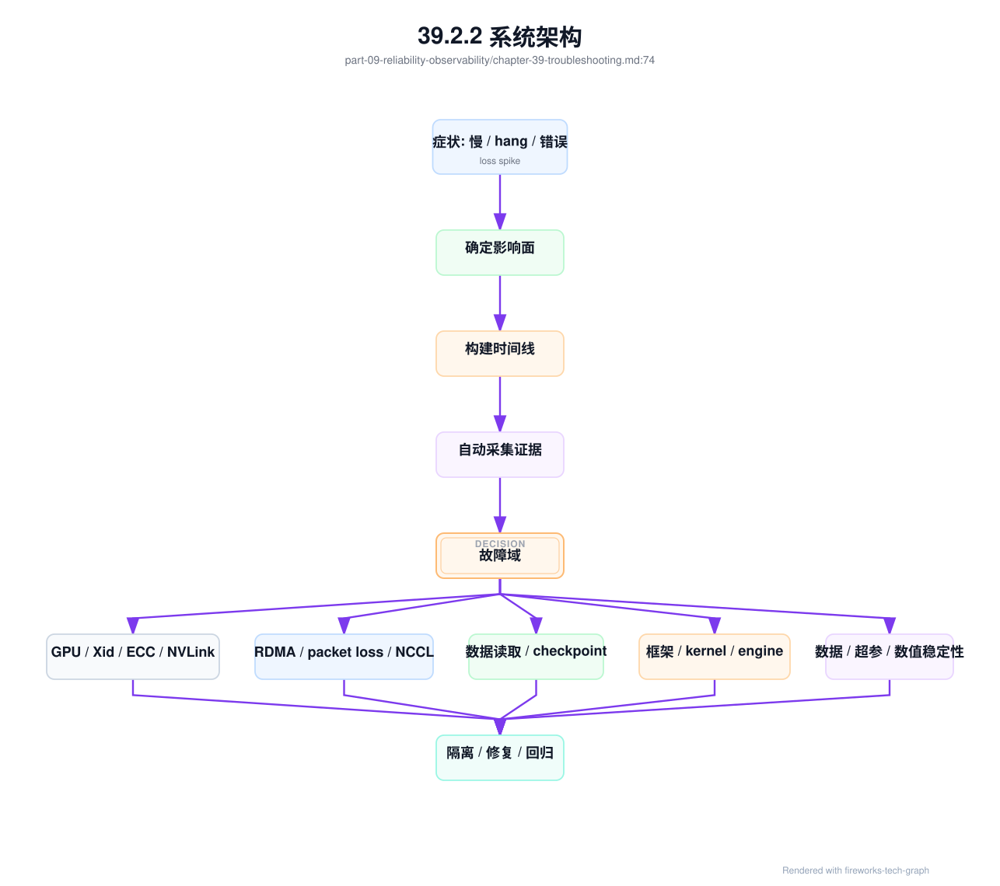
诊断系统最终应生成 incident_record，把排障现场变成可复盘、可审计、可改进的事实对象：
incident_record:
incident_id: inc-20260619-ttft-rack12
severity: sev2
entry:
source: slo_alert
symptom: ttft_p99_regression
detected_at: recorded
impact:
tenants: measured
models: [af-chat-large]
requests_failed_or_slow: measured
wasted_gpu_hours: calculated_if_applicable
estimated_margin_impact: calculated
timeline:
first_signal: recorded
mitigated_at: recorded
recovered_at: recorded
evidence:
reliability_evidence_id: rel-evt-001
recent_changes: [chg-gpu-baseline-20260619]
health_records: [resource-health-017-2]
fault_domains: [dc-a/rack-12]
baselines_compared: [h100-rack12-20260619]
mitigation:
immediate_actions:
- reroute_model_endpoint
- isolate_degraded_node
user_communication: required_if_customer_visible
root_cause:
status: confirmed_or_probable_or_unknown
category: change_regression
confidence: medium
follow_up:
- update_change_safety_case_stop_condition
- add_baseline_invalidation_rule
- improve_canary_coverage
这个对象的重点是防止事故知识丢失。一次事故不只是“某个节点坏了”，还包括谁受影响、哪些证据支持结论、哪些止血动作有效、哪些基线漏测、哪些变更门禁失效、浪费了多少 GPU 小时或毛利。没有 incident_record，复盘会变成会议纪要；有了它，事故可以反向更新准入、变更、资源池和成本模型。
incident_record 应引用第 37 章的 reliability_evidence_bundle，而不是在事后重新拼证据。Bundle 表示“事故触发时系统看到什么”，incident 表示“团队基于这些证据做了什么判断和动作”。这个区别很重要：如果事后资源已恢复、Pod 已重建、计数器已清零，再查询得到的是恢复后的世界，不是事故现场。可信复盘必须保留现场快照。
incident_evidence_linkage:
incident_id: inc-20260620-ttft-001
evidence_bundle: reb-20260620-ttft-rack12
evidence_quality:
request_trace_coverage: complete_or_partial
resource_health_coverage: complete_or_partial
baseline_comparison: present
change_timeline: present
cost_impact: estimated_or_measured
postmortem_updates:
baseline_invalidation_policy: update_if_gap_found
change_safety_case_template: update_stop_condition
resource_health_rule: tighten_or_relax
runbook: add_branch_or_action
reliability_cost_ledger: append_impact
这条 linkage 让复盘结果能回写系统。若 bundle 显示事故前有 baseline_invalidation_record，但资源池没有降级，问题在控制面联动；若 bundle 缺少 network evidence，问题在观测覆盖；若 stop condition 没有阻止灰度扩大，问题在 change_safety_case；若成本影响没有进入账本，可靠性投入以后仍然难以被解释。诊断体系的成熟标志，是每次事故都能改变至少一个规则、门禁或自动化动作。
训练类事故应进一步生成 training_incident_record。训练事故通常不是一个请求失败，而是大量 GPU 小时、checkpoint、数据版本、rank placement 和模型进度同时受影响。通用 incident 记录影响面，training incident 记录训练生命周期证据，便于判断是否恢复、回滚、重跑、隔离资源或调整调度策略。
training_incident_record:
incident_id: inc-20260620-train-001
training_job: exp-20260619-001
symptom: nccl_hang_or_loss_spike_or_checkpoint_slow
lifecycle_context:
training_lifecycle_event: tle-20260620-001
phase_at_detection: running
last_effective_step: measured
latest_valid_checkpoint: ckpt-step-120000
scheduling_context:
job_admission_event: jae-exp-20260619-001
placement_commit_record: pcr-exp-20260619-001
queue: training-prod
preemption_record: optional
runtime_evidence:
rank_mapping: rank-mapping-exp-20260619-001
communication_diagnostic_bundle: optional
storage_evidence: optional
resource_health_records: recorded
impact:
allocated_gpu_hours_lost: calculated
effective_training_tokens_lost: calculated
checkpoint_rollback_distance: calculated
model_release_delay: estimated
decision:
recover_from_checkpoint: true_or_false
isolate_resources: [node_or_fabric_or_storage_path]
update_queue_or_placement_policy: optional
这个对象能防止训练事故复盘停留在“重启后好了”。如果从 checkpoint 恢复损失很小，优先恢复进度；如果同一 placement 多次触发通信问题，应更新调度策略；如果抢占造成大量 lost progress，应调整 checkpoint-aware preemption；如果 Slurm accounting 和平台 ledger 差异很大，应触发对账。训练事故的结论必须回写训练平台，而不只是关闭工单。
训练事故的排障过程还应沉淀为 training_fault_tree_execution。它记录故障树具体走了哪些分支、每个分支引用了哪些证据、哪些假设被排除、最后采取了什么动作。这样复盘时可以区分“根因未知但证据充分排除高危分支”和“根因未知且证据缺失”。前者可能接受风险继续运行，后者必须补观测或门禁。
training_fault_tree_execution:
execution_id: tfte-inc-20260620-train-001
incident_id: inc-20260620-train-001
training_debug_bundle: tdb-exp-20260620-001
entry:
symptom: nccl_hang_or_no_step_progress
phase_at_detection: running
last_effective_step: measured
latest_valid_checkpoint: ckpt-step-120000
branches:
rank_exit:
verdict: ruled_out_or_confirmed_or_unknown
evidence: [pod_status, process_exit_codes, launcher_contract]
gpu_health:
verdict: ruled_out_or_confirmed_or_unknown
evidence: [dcgm_xid_ecc_nvlink, resource_health_records]
rdma_fabric:
verdict: ruled_out_or_confirmed_or_unknown
evidence: [network_evidence, rail_balance_report, congestion_event_record]
runtime_env:
verdict: ruled_out_or_confirmed_or_unknown
evidence: [nccl_env_contract, oci_runtime_injection_diff, gpu_device_visibility_reconciliation]
checkpoint_overlap:
verdict: ruled_out_or_confirmed_or_unknown
evidence: [checkpoint_overlap_evidence, storage_evidence]
data_pipeline:
verdict: ruled_out_or_confirmed_or_unknown
evidence: [dataset_manifest, data_loader_wait, storage_evidence]
model_code:
verdict: ruled_out_or_confirmed_or_unknown
evidence: [training_code_version, collective_call_consistency, loss_and_gradient_trace]
conclusion:
most_likely_domain: runtime_env_or_rdma_fabric_or_checkpoint_or_unknown
confidence: low_medium_or_high
evidence_gaps: []
actions:
immediate: [preserve_bundle, recover_from_checkpoint_or_hold_job]
resource: [cordon_node_or_degrade_fabric_or_none]
platform: [update_runtime_template_or_scheduler_policy_or_none]
follow_up: [add_acceptance_test_or_runbook_branch_or_prr_gate]
这个执行记录的价值在于让诊断可复现。两次 NCCL hang 如果都经过同一棵故障树，却在 runtime_env 分支确认了不同的 NCCL_SOCKET_IFNAME，说明 runtime 模板治理有问题；如果多次在 checkpoint_overlap 分支确认，说明 checkpoint 策略或存储隔离需要重构；如果总是落到 unknown 且 evidence gaps 相同，说明不是人不够努力，而是观测系统缺关键证据。故障树执行结果应回写 runbook、验收矩阵和第 41 章的成本账本。
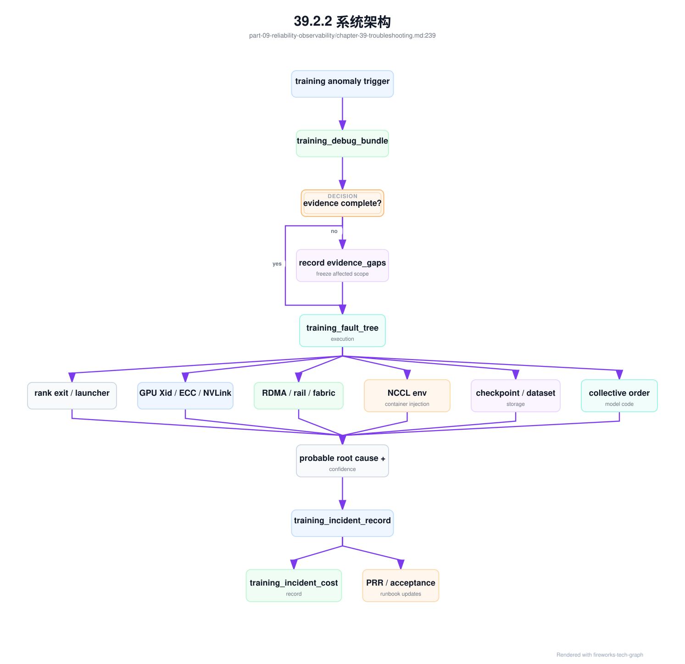
这张图强调，故障树不是文档，而是一条数据流。training_debug_bundle 是输入，training_fault_tree_execution 是推理过程，training_incident_record 是事故结论，成本记录和 PRR 更新是输出。若只有输入没有执行记录，团队无法复盘判断过程；若只有事故结论没有成本记录，组织无法决定是否投入修复；若没有 PRR 更新，同类事故会在下一次上线中复发。
网络与通信类故障尤其需要把故障树和证据链结合。下面的 NCCL hang 入口可以作为值班系统的自动检查顺序：
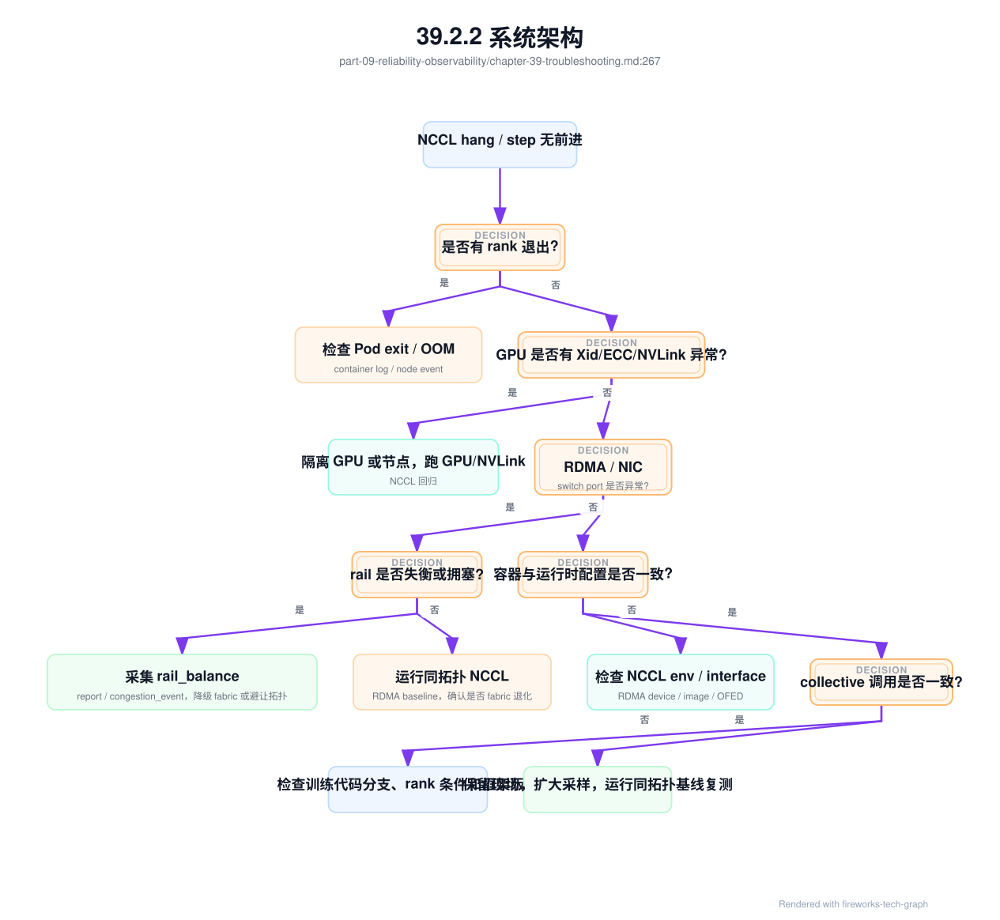
这张图的重点不是穷尽所有原因，而是保证前四类高频问题不会被遗漏：rank 退出、GPU/互联异常、RDMA/fabric 异常、容器或运行时漂移。每个分支都应对应自动采集项，不能只写在文档里。
网络分支里还要避免“看到端口计数就归因网络”的粗糙判断。更可靠的顺序是：先确认 slow op 和 affected ranks，再查这些 rank 的 GPU/NIC/rail/switch port，随后比较 rail_balance_report、congestion_event_record 和 fabric_baseline。如果端口计数异常但没有 rank 等待，可能只是旁路流量；如果 rank 等待明显但端口计数正常，可能是 NCCL interface 选择、container RDMA 可见性或 collective 调用顺序问题。诊断系统应把这两类情况分开。
nccl_hang_network_branch:
symptom: nccl_hang_or_step_no_progress
required_order:
- identify_last_collective_and_affected_ranks
- map_rank_to_gpu_nic_rail_switch_port
- compare_with_fabric_baseline
- attach_rail_balance_report
- attach_congestion_event_record_if_present
- attach_gpu_nic_topology_evidence
- attach_gpu_device_visibility_reconciliation
- attach_oci_runtime_injection_diff_if_container_changed
- verify_container_rdma_and_nccl_interface
verdicts:
rail_imbalance:
evidence: rail_balance_ratio_below_policy
action: reschedule_or_fix_rank_mapping
fabric_congestion:
evidence: ecn_pfc_rdma_retransmit_correlates_with_rank_wait
action: degrade_fabric_or_throttle_competing_traffic
runtime_interface_mismatch:
evidence: nccl_selected_interface_not_in_affinity_report
action: fix_runtime_template_or_env
device_visibility_mismatch:
evidence: gpu_device_visibility_reconciliation_failed
action: cordon_node_and_retest_container_runtime
runtime_injection_regression:
evidence: oci_runtime_injection_diff_changed_after_upgrade
action: rollback_runtime_or_rebuild_cdi_spec
insufficient_evidence:
action: preserve_evidence_and_rerun_same_topology_baseline
这个分支能把网络、调度和 runtime 的责任边界拆开。rail 失衡通常优先查放置和接口选择；拥塞事件通常优先查流量叠加、QoS 和容量；同拓扑 baseline 退化更像 fabric 或硬件问题；容器内接口错配则属于 runtime 模板或设备注入问题。分类越早，止血动作越准确。
当症状已经明确为网络拥塞或 fabric 变更后的通信回归，应进入 congestion_fault_tree_execution。它和上面的 NCCL hang 分支不同：NCCL hang 是从“任务不前进”进入，拥塞故障树是从“通信变慢、重传、ECN/PFC 异常、rail 失衡或变更后退化”进入。它的目标不是证明网络一定有问题，而是把拥塞、错误放置、checkpoint 叠加、runtime 漂移和观测缺口拆开。
congestion_fault_tree_execution:
execution_id: cfte-20260620-001
trigger:
symptom: step_time_spike_or_nccl_bandwidth_regression
detected_by: communication_regression_record_or_congestion_event_record
recent_change:
fabric_change_record: fabric-chg-20260620-003
fabric_change_regression_gate: fcg-20260620-003
scope:
affected_jobs: [train-20260620-017]
affected_racks: [rack-12, rack-13]
affected_rails: [rail1]
affected_collectives: [all_reduce, reduce_scatter]
affected_time_window: 2026-06-20T10:12Z/2026-06-20T10:26Z
required_evidence:
rank_mapping: attached
gpu_nic_topology_evidence: attached
network_path_evidence: attached
rail_balance_report: attached
congestion_event_record: attached_if_present
fabric_baseline: train-fabric-a-20260619
fabric_change_acceptance_matrix: fcam-20260620-003_if_recent_change
collective_trace_record: attached
checkpoint_overlap_evidence: attached
container_rdma_validation: attached
nccl_env_contract: attached
branches:
workload_or_rank_placement:
checks:
- rank_groups_cross_unexpected_rack_or_rail
- tensor_or_expert_group_violates_rank_topology_contract
- placement_commit_record_contains_degraded_reason
action_if_confirmed: reschedule_or_fix_topology_constraint
fabric_path_or_rail:
checks:
- rail_balance_ratio_below_policy
- switch_port_errors_or_retransmit_correlate_with_affected_ranks
- same_topology_nccl_baseline_regressed
action_if_confirmed: degrade_fabric_or_isolate_rail
pfc_ecn_qos:
checks:
- pfc_pause_or_ecn_mark_delta_above_baseline
- qos_queue_mapping_differs_from_policy
- pause_or_ecn_spike_matches_collective_window
action_if_confirmed: rollback_or_repair_qos_profile
rdma_nic_stack:
checks:
- gid_mtu_ofed_firmware_diff
- rdma_device_error_or_retransmit_on_selected_nic
- container_path_differs_from_host_path
action_if_confirmed: cordon_node_or_retest_rdma_stack
nccl_runtime:
checks:
- selected_interface_not_expected
- nccl_version_or_env_changed
- algorithm_or_channel_count_changed_without_gate
action_if_confirmed: rollback_runtime_template_or_update_nccl_env_contract
storage_overlap:
checks:
- checkpoint_window_overlaps_collective_spike
- artifact_or_dataset_traffic_shares_training_fabric
- storage_benchmark_regressed_in_same_window
action_if_confirmed: throttle_or_reschedule_checkpoint_and_storage_traffic
concurrent_workload:
checks:
- background_training_or_batch_job_started_same_window
- quota_or_mixed_traffic_policy_allows_unbounded_burst
- inference_or_model_load_traffic_shares_fabric
action_if_confirmed: apply_traffic_policy_or_queue_isolation
telemetry_gap:
checks:
- missing_switch_port_counter
- missing_rank_to_port_mapping
- missing_container_rdma_evidence
action_if_confirmed: preserve_unknown_verdict_and_open_observability_action
verdict:
most_likely_domain: fabric_path_or_pfc_ecn_qos_or_storage_overlap_or_unknown
confidence: evidence_based
stop_the_bleeding:
- deny_new_large_training_on_affected_fabric
- move_checkpoint_heavy_jobs_out_of_window
- rollback_recent_qos_profile_if_gate_failed
required_followups:
- update_fabric_change_acceptance_matrix
- append_network_incident_cost_record
- update_prr_fabric_change_drill_if_gap_found
这份执行记录最重要的是把“拥塞”从一个网络词变成系统判断。若 workload_or_rank_placement 成立，根因可能是调度没有保持 tensor group 或 rail 亲和；若 pfc_ecn_qos 成立，根因更像 fabric 配置漂移；若 storage_overlap 成立，单纯扩网络可能不是最佳修复，调整 checkpoint 窗口、隔离存储流量或优化 manifest 更有效；若只有 telemetry_gap 成立，就不能写成网络根因，只能写成证据不足并补观测。高级排障的价值在于保留不确定性，而不是把复杂事故硬归因给某一层。
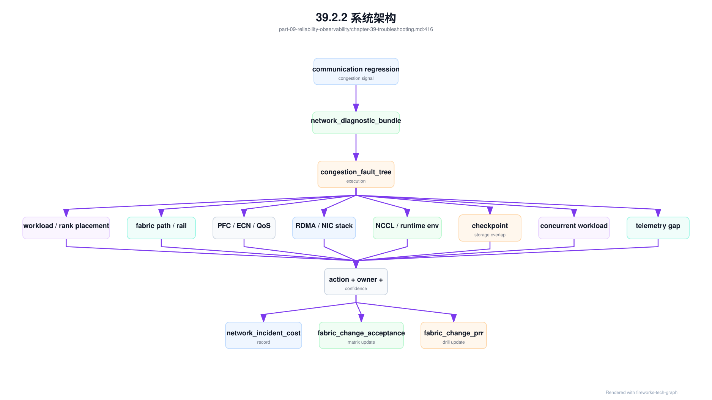
值班时可以先止血再完成树，但不能先下根因结论。对大训练池，常见止血动作包括暂停 affected fabric 的新大训练、把 checkpoint-heavy job 移出拥塞窗口、隔离异常 rail、回滚最近 QoS profile、降低背景批量任务优先级、或把推理权重加载迁移到独立窗口。这些动作降低损失，但最终仍要通过故障树把影响、证据、owner 和复测写清楚。
存储类故障也需要独立故障树，因为它们经常伪装成 GPU、网络或模型问题。GPU idle 可能来自 data loader，TTFT 上升可能来自权重 cache miss，NCCL 变慢可能被 checkpoint 并发写入放大。
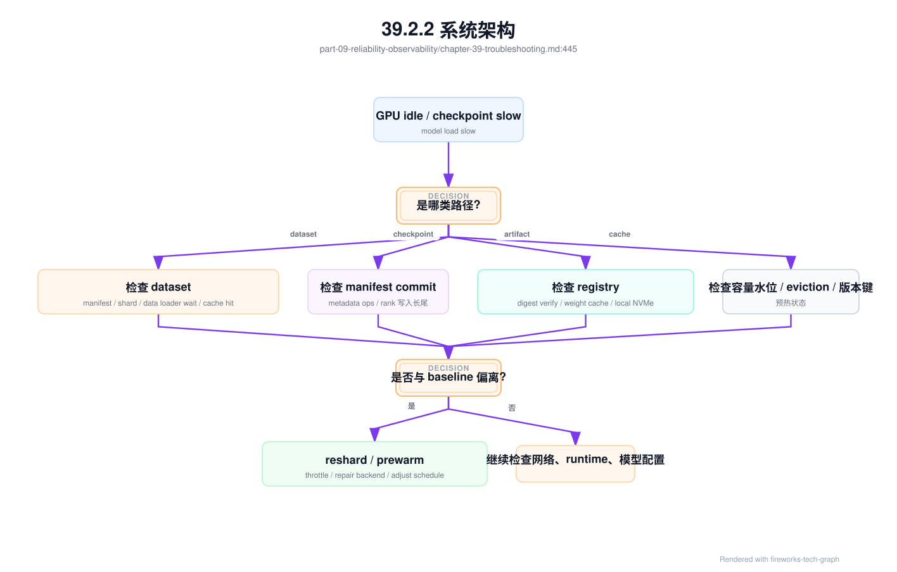
这个故障树要求先确认路径语义，再查对应证据。不要看到 GPU idle 就直接扩大 batch，也不要看到模型加载慢就盲目扩容副本。存储问题的关键是 path kind 和 manifest。
39.3 关键技术¶
39.3.1 GPU Xid¶
GPU Xid 是 NVIDIA 驱动报告的 GPU 错误事件类别。它可能表示应用错误、驱动问题、硬件异常、显存问题、GPU reset、访问非法地址或其它设备状态异常。不同 Xid 的含义和严重程度不同，不能把所有 Xid 都当成同级故障，也不能因为 GPU 仍可见就忽略严重 Xid。
排查 Xid 时要收集时间、GPU UUID、节点、进程、容器、job、tenant、driver、CUDA、GPU 型号、温度、功耗、ECC、PCIe/NVLink 状态、最近任务和是否伴随掉卡。还要看 Xid 是否重复、是否集中在某张卡、是否出现在特定 workload、是否与驱动升级或温度变化相关。单次 Xid 与持续 Xid 的处理策略应不同。
处置上，应按 Xid 类型和影响面分级。轻微或应用触发的事件可以观察并关联任务；严重或重复 Xid 应将 GPU 或节点标记 degraded，阻止新的长训练任务进入；伴随掉卡、不可纠正错误或任务大面积失败时，应隔离并维修。自动重启任务不能替代根因分析。
Xid 还应进入复盘和准入。维修后要重新跑 GPU burn-in、相关 workload 和驱动基线；同批次节点若出现类似 Xid，要做批次分析。Xid 是设备信号，但它影响的是训练进度、推理 SLA 和 GPU 小时成本。
Xid 诊断还要注意上下文。某些 Xid 可能由用户代码非法访问触发，某些则更像硬件或驱动问题。平台应结合容器退出码、内核日志、驱动版本和是否跨任务复现判断，避免把用户错误误判为坏卡，也避免把坏卡继续交给用户。
工程上可以把 Xid 分成观察、降级、隔离和维修四类动作，并把规则写入资源池。规则不应只看错误码，还要看重复次数、任务价值、是否跨租户复现和是否影响可重复测试。这样处理既避免过度下线，也避免把高风险设备交给关键训练。
39.3.2 ECC error¶
ECC error 是显存纠错相关错误。可纠正错误说明硬件成功修复了位错误，但频繁出现意味着风险上升；不可纠正错误通常需要严肃处理，可能导致任务失败、数据错误或 GPU reset。对于长时间训练任务，显存稳定性直接关系到训练可信度和恢复成本。
诊断 ECC 要看错误类型、计数增长速度、是否集中在某张卡、是否伴随 Xid、是否与温度、功耗或特定 workload 相关。还要区分历史累计值和当前窗口增长。许多误判来自只看累计计数，不看增长趋势。生产系统应保存时间序列，而不是只在事故时读取当前值。
对于不可纠正 ECC，应隔离 GPU 或节点并走维修流程。对于可纠正但增长明显的 ECC，应根据资源等级处理：高优训练池可以更保守，低优批量池可以观察但标记风险。不要让高价值长训练运行在有异常趋势的 GPU 上，因为失败代价远高于提前隔离。
训练 loss spike 与 ECC 并不总有因果关系，但硬件错误是必须排除的因素。若 loss spike 与特定节点、GPU 或时间窗口相关，同时 ECC/Xid 有增长，应优先隔离并复测。若没有硬件证据，再继续查数据、学习率、混合精度和代码变更。
ECC 事件还应影响资源等级。高优训练池对 ECC 趋势更敏感，低优实验池可以采用观察策略，但必须透明标记。这样既避免过度浪费资源，也保护关键任务的可信度。硬件风险应被资源池表达，而不是藏在监控角落。
验收和维修回池也要包含 ECC 口径。更换硬件、重装驱动或重启节点后，如果只看设备可见性，就可能把趋势性显存问题放回生产。回池前应比较错误计数是否清零、压力测试期间是否继续增长，以及同批次设备是否出现类似模式。
39.3.3 NVLink error¶
NVLink error 表示 GPU 间互联路径存在异常。它可能导致节点内通信带宽下降、NCCL 性能变差、tensor parallel 推理变慢或训练任务 hang。NVLink 问题不一定让 GPU 消失，因此很容易被只看 GPU 可见性的健康检查漏掉。对强 GPU 间通信 workload，它是关键风险。
排查 NVLink error 时，要看 NVLink 状态、错误计数、GPU-to-GPU 带宽矩阵、单节点 NCCL、DCGM、驱动日志、BMC 事件和服务器拓扑。若某个 GPU pair 异常，需要判断是链路、NVSwitch、GPU、PCIe 还是固件问题。维修后要重新跑 nvbandwidth 和单节点 NCCL，而不是只确认设备重新出现。
NVLink 退化会影响调度语义。资源池如果仍把该节点标记为完整 NVSwitch 域，tensor parallel 服务或单节点训练会持续被影响。平台应支持将节点从强通信池降级到低优或弱通信池，直到互联基线恢复。这样比完全下线更灵活，也比无差别调度更安全。
对推理服务，NVLink error 可能表现为 TPOT 上升、tokens/s 下降或多 GPU replica 长尾增加。对训练任务，可能表现为单节点 collective 变慢或 rank skew。诊断时必须把 NVLink 指标与模型并行策略和 GPU placement 关联。
NVLink 故障还要区分链路退化和调度错误。如果任务本来被放到跨域 GPU 上，性能差不一定是硬件故障；如果同域基线突然下降，才更像互联退化。诊断必须比较“期望拓扑”和“实际拓扑”。
因此，调度系统需要记录 placement 决策。一个 tensor parallel replica 被放在哪些 GPU 上、这些 GPU 是否处于同一个 NVSwitch 域、当时节点健康状态如何，都应进入 trace。否则性能回归发生后，只能从当前状态倒推，无法证明当时的拓扑是否满足预期。
如果没有 placement 记录，NVLink 诊断只能停留在猜测层面，无法区分调度、硬件和 runtime 责任边界。
39.3.4 RDMA error¶
RDMA error 涉及 NIC、driver、firmware、OFED、交换机、RoCE/InfiniBand 配置、MTU、PFC/ECN、GID、权限、CNI 和容器设备注入。它常表现为 NCCL timeout、吞吐下降、偶发 hang、checkpoint 慢或跨节点推理抖动。RDMA 故障的难点在于它经常跨主机、网络和容器边界。
排查 RDMA 要同时看主机和网络侧：NIC counters、RDMA counters、driver/firmware、GID、MTU、容器内设备、NCCL 日志、交换机端口、PFC/ECN、链路状态、rail 和 rack。只在容器内重启任务，往往无法解决根因；只看交换机端口，也无法判断影响了哪个 job 和 rank。
RDMA 故障应按 topology 分析。一个 rail 异常会让部分 rank 慢，从而拖住整个训练；某个 rack 的配置漂移可能只影响跨 rack 大任务；某个容器权限问题可能只影响 Kubernetes 作业，不影响宿主机测试。诊断包必须包含 rank-to-node、node-to-NIC、NIC-to-switch 和 job 时间线。
处置策略包括隔离 suspect NIC、禁用异常 rail、阻止新大任务进入相关拓扑域、回滚 OFED/firmware/网络配置、重跑 RDMA 和 NCCL baseline。RDMA error 不应只作为网络告警，它直接影响 GPU 小时效率。
RDMA 诊断还应记录容器视角。宿主机 RDMA 正常但容器缺设备、权限或库路径，是 Kubernetes GPU 集群的常见问题。生产任务运行在容器里，最终证据必须来自容器内路径，而不只是宿主机测试。
另一个容易被忽略的点是配置一致性。RDMA 依赖主机内核、驱动、固件、交换机、CNI 和应用环境变量同时正确，任何一层漂移都可能只在大规模作业中暴露。平台应保存每个节点的版本指纹，并在故障时把异常节点与同批健康节点比较，而不是只看单点配置是否“看起来正确”。
对于 RoCE，拥塞控制尤其需要证据化。PFC pause、ECN mark、队列丢弃和重传之间有因果关系，但不能凭单个计数判断。只有把端口、队列、业务流和 rank 时间线对齐，才能判断是链路故障、拥塞热点还是配置错误。
39.3.5 packet loss¶
Packet loss 是网络包丢失。对普通 HTTP 服务，少量丢包可能表现为重传和延迟；对 RDMA、NCCL 和同步训练任务，少量丢包也可能放大为 step time 尖刺、通信 timeout 或 hang。AI 训练的同步特性让局部丢包影响全局进度。
丢包来源包括物理链路、光模块、交换机拥塞、队列溢出、MTU 不一致、PFC 配置不当、ECN 配置错误、流量热点、错误 cabling 和故障绕行。诊断时要区分持续丢包和突发丢包。持续丢包更像链路或配置问题，突发丢包可能与 checkpoint、权重加载、多任务混部或流量热点相关。
排障应把端口计数和任务时间线对齐：丢包是否发生在 step time spike 同一时间，是否只影响某个 rack、某些节点或某条 rail，是否与 checkpoint 或多任务并发相关。分钟级平均可能掩盖短时丢包，因此关键 fabric 要保留更细粒度 counters 和事件。
处置上，先降低影响面：暂停新大训练进入 suspect domain，必要时迁移推理副本，限制突发存储或权重加载流量。根因处理则可能是换线缆/光模块、调整 PFC/ECN、修正 MTU、改变调度拓扑或扩容热点链路。Packet loss 诊断需要网络和 workload 双视角。
Packet loss 的复盘应回答是否可预防。若来自配置漂移，应补配置审计；若来自流量热点，应补调度或容量；若来自硬件链路，应补准入和巡检。否则下一次丢包仍会以训练 hang 或推理长尾出现。
丢包诊断还要警惕采样窗口。很多网络系统按分钟聚合，训练 step 却可能在几秒内被拖慢。若只看粗粒度平均，结论会变成“没有明显异常”。关键链路应保留短窗口峰值和事件日志，至少能回看事故前后的突发变化。
39.3.6 NCCL hang¶
NCCL hang 指分布式通信长时间没有前进。它可能来自某个 rank 失败、网络异常、GPU 错误、进程 OOM、容器被驱逐、接口选择错误、版本不兼容、collective 调用不一致或训练代码在某些 rank 走了不同分支。Hang 的难点是它往往没有明确错误码，只表现为任务不再推进。
诊断第一步是确认所有 rank 状态。是否有 rank 退出，是否卡在同一 collective，Pod 是否重启，GPU 是否可用，某个节点是否 NotReady，是否有 OOM、Xid、ECC、RDMA error 或网络端口异常。第二步检查 NCCL 日志、rank 到节点映射、NCCL 环境变量、接口选择、拓扑路径和最近变更。
处置时要先保留现场。自动重启能释放资源，但如果日志、rank 状态、端口计数和 GPU 事件丢失，根因无法复盘。平台应在检测到 hang 后自动归档诊断包，并临时阻止新大任务调度到 suspect 节点或拓扑域。止血和取证要同时进行。
长期治理需要把 NCCL hang 转化为故障树。常见分支包括 rank 退出、网络/RDMA、GPU/Xid/ECC、容器/调度、版本/环境变量、代码 collective 不一致。每个分支都有固定证据和处置动作。这样新 oncall 也能按路径排查，而不是依赖专家在线。
NCCL hang 还应和作业恢复策略结合。若任务有健康 checkpoint，可以先恢复业务进度；若没有 checkpoint，必须优先保留现场再决定是否 kill。诊断和恢复的顺序，要根据任务价值和现场保留能力决定。
对平台而言，最重要的是自动识别“没有前进”。可以通过 step time、日志心跳、GPU 利用率、NCCL 日志和进程状态综合判断。单看 GPU utilization 容易误判，因为某些 hang 场景 GPU 仍有零星活动；单看日志也不够，因为日志可能被缓冲或卡在某个 rank。
39.3.7 training loss spike¶
Training loss spike 是训练 loss 突然升高、出现异常波动或变成 NaN/Inf。它可能来自数据异常、学习率、混合精度、梯度爆炸、随机性、代码变更、checkpoint 恢复错误，也可能来自硬件或通信错误。Loss spike 是模型信号，但不应只由模型团队排查。
诊断时要先区分数值问题和系统问题。检查数据 batch、dataset version、tokenizer、学习率、gradient norm、loss scaling、overflow、checkpoint 恢复点、代码版本、GPU ECC/Xid、节点重启、NCCL 错误和最近发布。时间线很重要：spike 是否发生在数据切换、恢复、学习率变化、节点异常或通信错误附近。
如果 loss spike 与特定节点、GPU、rank 或硬件事件相关，应怀疑硬件或环境；如果与数据 shard、样本来源或特定 batch 相关，应检查数据质量；如果在特定 step 后出现，应检查训练策略、混合精度和 checkpoint。不要在没有排除系统证据前直接调整超参，否则会掩盖真实问题。
处置上，先保存 checkpoint、数据 batch、日志、硬件事件和随机种子。必要时从上一个健康 checkpoint 恢复，并在隔离 suspect 节点后重跑短窗口验证。Loss spike 的复盘应同时记录模型原因和基础设施证据，避免下一次重复争论。
Loss spike 还应有升级路径。若影响关键预训练，应同时拉模型、数据、平台和硬件团队；若只是单个实验任务，可以先由用户自查数据和代码。影响面决定响应级别，不能所有 loss 波动都按最高事故处理。
复现窗口是 loss spike 诊断的核心资产。平台应帮助用户保留问题 step 附近的数据 shard、checkpoint、随机种子、容器镜像和硬件映射。没有这些信息，事后只能讨论曲线形状，无法证明是数据、代码、数值还是基础设施触发。
39.3.8 inference latency spike¶
Inference latency spike 是推理延迟尖刺。它可能来自流量突增、队列积压、大 prompt、长输出、prefill 慢、decode 拥塞、KV Cache 不足、冷启动、模型权重加载、网络抖动、限流配置、下游依赖、热降频或特定租户请求形态变化。延迟尖刺必须拆成阶段看。
诊断路径应从用户体验指标进入：TTFT、TPOT、TPOP、E2E latency、错误率和 streaming 中断。TTFT 高常与 gateway 排队、routing、prefill、冷启动和权重加载有关；TPOT 高常与 decode kernel、batching、HBM bandwidth、KV Cache 和 GPU 状态有关。把所有延迟合在一起，会让定位方向错误。
应按 tenant、model、model version、endpoint、replica、node、GPU 和 request shape 切分。只有某个租户慢，可能是上下文过长或配额策略；只有某个 replica 慢，可能是节点、缓存或热状态；所有 replica 都慢，可能是流量、模型版本或共享依赖。切分维度决定诊断速度。
处置包括临时限流、路由到健康 replica、回滚模型或 runtime、预热权重缓存、扩容、降低 batch 或隔离 degraded 节点。复盘时要计算受影响请求、失败 token、SLO 违约和 cost impact。推理故障诊断既要解释技术原因，也要解释用户影响。
Inference latency spike 还要防止平均值掩盖问题。某个租户、某类长 prompt 或某个区域的长尾，可能在全局平均中很小，但对业务非常严重。诊断必须优先按用户可见维度切分，而不是只看全局曲线。
推理延迟诊断还应关联 token 形态。相同请求数下，input token、output token、并发 decode 长度和 KV Cache 占用完全不同，基础设施压力也不同。若只按 QPS 解释峰值，就会误把 token 放大当成系统退化，或者反过来漏掉真正的引擎回归。
因此，推理事故复盘至少要同时给出请求数、token 数、上下文长度分布和输出长度分布。
运行时诊断应进一步落到 inference_latency_runtime_branch。这个分支把 Gateway、Model Serving、Runtime 和 streaming 通道的证据放到同一棵树里，先判断慢在 admission 前、prefill、decode、KV 状态、PD transfer、engine canary，还是用户侧连接。这样 oncall 不会因为 GPU utilization 不高就排除 Runtime，也不会因为 endpoint ready 就排除 Serving。
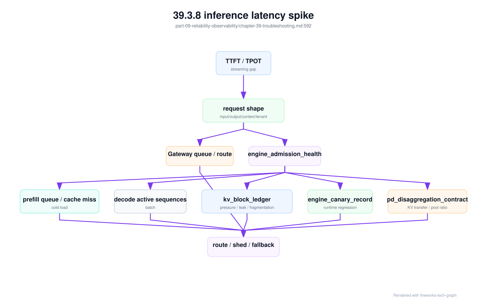
inference_latency_runtime_branch:
symptom:
ttft_p95: regressed
tpot_p95: normal_or_regressed
streaming_gap: observed
mandatory_evidence:
request_trace: required
routing_decision: required
endpoint_admission_decision: required
engine_admission_health: required
kv_block_ledger: required_for_kv_or_long_context
kv_block_leak_forensic_record: required_if_unreleased_blocks
engine_canary_record: required_if_recent_runtime_change
engine_canary_guardrail_action: required_if_guardrail_triggered
pd_disaggregation_contract: required_if_pd_enabled
pd_transfer_evidence: required_if_pd_enabled
speculative_decoding_regression_record: required_if_speculative_enabled
branch_checks:
gateway_queue:
signal: gateway_queue_ms_high
action: tenant_limit_or_route_review
prefill_pressure:
signal: prefill_queue_high_or_prefix_cache_miss
action: split_long_context_or_warm_cache
decode_pressure:
signal: active_sequences_high_or_tpot_regression
action: adjust_batching_or_decode_pool
kv_pressure:
signal: kv_block_pressure_high_or_release_latency_high
action: reduce_context_limit_fix_cancel_release_or_scale_memory_pool
engine_regression:
signal: canary_guardrail_failed
action: freeze_or_rollback_engine_profile
speculative_regression:
signal: draft_overhead_or_schema_failure_or_cost_regression
action: disable_speculative_for_slice_and_update_gate
pd_transfer:
signal: kv_transfer_ms_high_or_pool_ratio_mismatch
action: rebalance_prefill_decode_or_fallback_monolithic
这个分支也定义了“不能下结论”的条件。没有 request shape，就不能判断 QPS 是否真的异常；没有 engine_admission_health，就不能区分 endpoint ready 与 endpoint 可承诺；没有 kv_block_ledger，就不能把 HBM 高水位归因到长上下文、泄漏、碎片或 prefix cache；没有 canary 记录，就不能把 runtime 变更排除在外。排障文档应明确这些证据缺失时的下一步采集动作，而不是让值班人员凭经验猜。
运行时故障树还要区分“根因证据”和“止血动作”。endpoint_admission_decision 用来判断 Gateway 是否把请求送错池；kv_block_leak_forensic_record 用来判断请求关闭后状态是否泄漏；pd_transfer_evidence 用来判断 PD 分离的慢点在 prefill、transfer 还是 decode admission；speculative_decoding_regression_record 用来判断加速特性是否只在某些切片破坏质量或成本；engine_canary_guardrail_action 用来判断系统是否已经冻结、降权或回滚。缺少动作证据时，不能把“当前指标恢复”直接解释为“故障已解决”，因为可能只是自动系统临时绕过了问题。
runtime_troubleshooting_stop_rules:
cannot_claim_gateway_correct:
unless: endpoint_admission_decision_replayed
cannot_claim_kv_leak_absent:
unless: kv_block_ledger_closed_and_leak_forensic_clean
cannot_claim_pd_healthy:
unless: pd_transfer_evidence_within_contract
cannot_claim_speculative_safe:
unless: speculative_decoding_regression_record_absent_or_closed
cannot_claim_canary_contained:
unless: engine_canary_guardrail_action_recorded_and_effective
这些 stop rules 的作用是提高排障纪律。资深工程师最容易犯的错误不是不知道工具，而是在证据不完整时过早归因。把“不能下结论”的条件写进 runbook，可以减少事故中凭经验争论，把注意力转向补证据、止血和复测。
推理 runtime 事故也应留下 inference_runtime_fault_tree_execution。它把一次 TTFT/TPOT/streaming gap 事故的判断过程结构化：先确认 request shape 和 admission，再检查 prefill、decode、KV、PD、canary、streaming 和 metering close。这样复盘时可以看到“为什么回滚 engine profile”“为什么只关闭长上下文 admission”“为什么不是 Gateway 限流问题”。
inference_runtime_fault_tree_execution:
execution_id: irfte-inc-20260620-ttft-001
incident_id: inc-20260620-ttft-001
diagnostic_bundle: inference-runtime-bundle-20260620-001
entry:
symptom: ttft_tpot_streaming_gap_or_cancel_waste
affected_endpoint: af-chat-large-prod
affected_slices: [long_context_qa]
first_signal_at: recorded
request_state:
engine_request_state_ledger_samples: sampled
endpoint_admission_decisions: sampled
engine_admission_health: eah-af-chat-large-prod
branches:
gateway_or_route:
verdict: ruled_out_or_confirmed_or_unknown
evidence: [endpoint_admission_decision, route_weight_change, tenant_limit_event]
prefill:
verdict: ruled_out_or_confirmed_or_unknown
evidence: [prefill_queue, prefix_cache_miss, model_load_event]
decode:
verdict: ruled_out_or_confirmed_or_unknown
evidence: [active_sequence_count, decode_batch, tpot_trace]
kv_state:
verdict: ruled_out_or_confirmed_or_unknown
evidence: [kv_block_ledger, kv_block_leak_forensic_record]
pd_transfer:
verdict: ruled_out_or_confirmed_or_unknown
evidence: [pd_disaggregation_contract, pd_transfer_evidence]
canary_or_runtime_change:
verdict: ruled_out_or_confirmed_or_unknown
evidence: [engine_canary_record, engine_canary_guardrail_action]
streaming_or_metering_close:
verdict: ruled_out_or_confirmed_or_unknown
evidence: [streaming_close_event, metering_events, engine_request_state_ledger]
conclusion:
most_likely_domain: kv_state_or_pd_transfer_or_engine_regression_or_gateway
confidence: low_medium_or_high
evidence_gaps: []
actions:
immediate: [freeze_canary_or_reduce_long_context_or_route_away]
runtime: [rollback_engine_profile_or_disable_feature_or_none]
accounting: [replay_metering_or_mark_partial_usage]
follow_up: [add_prr_drill_or_runtime_gate_or_runbook_branch]
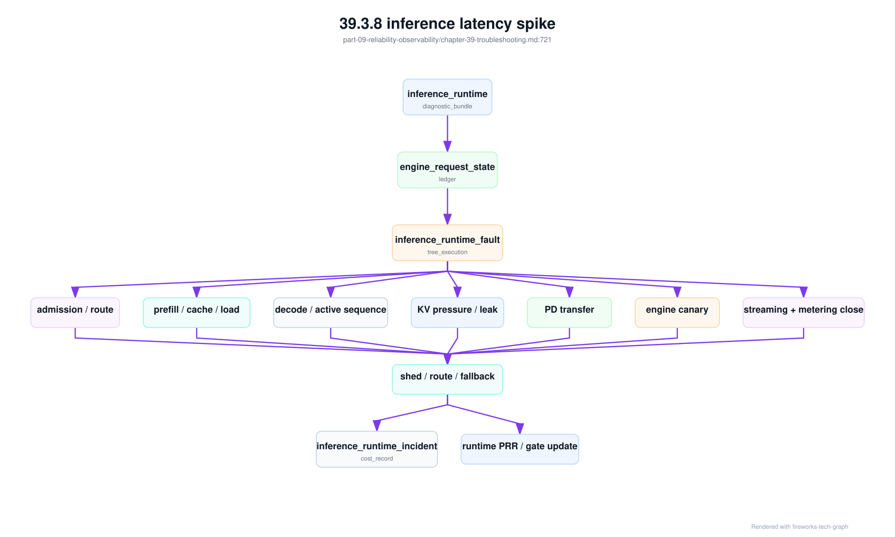
这个执行记录让“推理慢”不再是单一故障。TTFT 异常可能需要预热权重或拆长上下文；TPOT 异常可能要调 decode active sequence；streaming gap 可能是客户端背压或 server flush；取消后 HBM 不降可能是 KV 释放；PD 分离超时可能要切回 monolithic endpoint；canary 触发可能只需要关闭 speculative decoding 的某个 slice。动作越贴近分支，影响面越小。
模型服务发布事故需要另一棵故障树。它的入口症状不是“引擎慢”本身，而是发布组合相关异常：canary 通过后全量质量下降，fallback 后格式或工具调用失败，回滚后仍未恢复，某些节点加载旧权重或旧 tokenizer，usage 字段变化导致账单 hold，Gateway route 指向的 release 与模型目录不一致。这类问题跨越 Gateway、Model Serving、artifact cache、runtime、计量和质量门禁，如果只按单层排障，很容易把组合漂移误判成模型能力问题或 runtime 问题。
serving_release_fault_tree_execution:
execution_id: srft-20260620-001
incident_id: inc-20260620-release-001
serving_release_evidence_bundle: sreb-af-chat-large-20260620-001
entry:
symptom: rollback_not_recovering_or_fallback_quality_drop_or_release_billing_drift
affected_endpoint: af-chat-large-prod
affected_tenants: [enterprise-a]
affected_task_slices: [support_chat, rag_citation, tool_call_json]
required_evidence:
serving_release_bundle: srb-af-chat-large-20260619-r3
serving_route_release_contract: srrc-af-chat-large-20260620
serving_quality_contract: sqc-af-chat-20260619-r3
endpoint_admission_decisions: sampled
cache_residency: sampled
metering_events: sampled
branches:
release_bundle_integrity:
verdict: ruled_out_or_confirmed_or_unknown
evidence: [weights_digest, tokenizer_digest, chat_template_version, engine_config_digest]
action_if_confirmed: freeze_release_and_restore_baseline_bundle
gateway_route_and_fallback:
verdict: ruled_out_or_confirmed_or_unknown
evidence: [serving_route_release_contract, endpoint_admission_decision, routing_quality_decision_record]
action_if_confirmed: patch_route_or_disable_incompatible_fallback
artifact_cache_and_distribution:
verdict: ruled_out_or_confirmed_or_unknown
evidence: [model_artifact_distribution, cache_residency, cache_invalidation_record]
action_if_confirmed: block_nodes_with_invalid_cache_and_rewarm
runtime_and_protocol:
verdict: ruled_out_or_confirmed_or_unknown
evidence: [runtime_quality_gate, engine_canary_record, protocol_contract_test, usage_schema]
action_if_confirmed: rollback_engine_or_usage_adapter
rollback_path:
verdict: ruled_out_or_confirmed_or_unknown
evidence: [serving_rollback_record, serving_rollback_drill, warm_capacity, drain_contract]
action_if_confirmed: execute_full_bundle_rollback_or_declare_partial_rollback
metering_and_billing:
verdict: ruled_out_or_confirmed_or_unknown
evidence: [metering_events, usage_schema, token_count_drift, billing_dispute_replay]
action_if_confirmed: hold_billing_and_replay_usage
outputs:
serving_release_cost_record: generated_if_customer_or_capacity_impact
quality_cost_ledger: append_if_quality_regressed
inference_runtime_cost_ledger: append_if_runtime_or_cache_impact
prr_gate_update: generated_if_preventable_gap
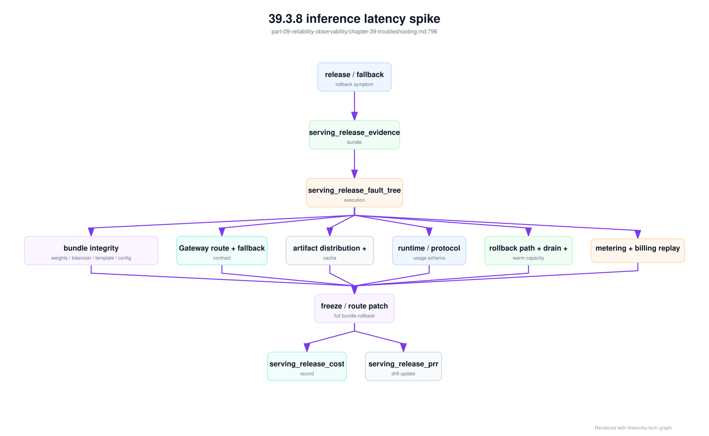
这棵故障树的 stop rule 是：没有 serving_release_bundle，不能声称线上组合一致；没有 serving_route_release_contract 和 endpoint_admission_decision，不能声称 Gateway 路由正确；没有 cache_residency 和 invalidation 证据，不能声称节点没有加载旧产物；没有 usage_schema 和 metering replay，不能声称账单正确；没有 serving_rollback_drill，不能把回滚能力当作既定事实。发布事故的关键不是更快猜根因，而是防止“半回滚”“半兼容”“半计量”进入生产。
质量事故还需要 quality_fault_tree_execution。它的入口不是 5xx 或资源错误，而是用户可见价值下降：投诉、点踩、人工接管、引用错误、工具轨迹失败、A/B 护栏触发、低价 fallback 成功率下降，或者同一任务切片的 cost per successful answer 上升。质量故障树的第一步不是问“模型是不是变差”，而是问“证据是否足以归因”。如果评测 gate 已失效、feedback pipeline 关联失败、serving contract 不一致，直接讨论模型参数没有意义。
quality_fault_tree_execution:
execution_id: qfte-20260620-001
incident_id: inc-20260620-quality-001
trigger:
symptom: feedback_spike_or_handoff_delta_or_citation_failure_or_experiment_guardrail_breach
affected_task_slices: [rag_citation, tool_call_json]
affected_tenants: [enterprise-a]
entry_evidence:
quality_evidence_bundle: qeb-20260620-support-001
quality_evidence_validity: qev-support-20260620-001
quality_evidence_dependency_graph: qedg-support-20260620
serving_release_evidence_bundle: sreb-af-chat-large-20260620-001
branches:
evidence_validity:
checks:
- quality_gate_freshness_contract_usable
- eval_contamination_invalidation_record_none_open
- judge_drift_calibration_record_passed
- feedback_pipeline_replayable_rate_within_policy
verdict: pass_or_invalid_evidence
action_if_confirmed: block_ramp_and_rerun_gate
serving_combination:
checks:
- serving_quality_contract_matches_gate_execution
- weights_tokenizer_template_runtime_match_bundle
- usage_schema_and_protocol_contract_match
verdict: pass_or_serving_mismatch
action_if_confirmed: full_bundle_rollback_or_patch_release
route_and_experiment:
checks:
- routing_quality_decision_record_matches_scorecard
- online_experiment_guardrail_stop_rule_evaluated
- fallback_capability_equivalent_for_slice
verdict: pass_or_bad_route_or_experiment
action_if_confirmed: freeze_experiment_or_disable_fallback
rag_agent_context:
checks:
- retrieval_permission_decision_replay
- rag_context_snapshot_matches_prompt
- agent_tool_execution_record_policy_replay
- agent_budget_ledger_within_policy
verdict: pass_or_rag_agent_failure
action_if_confirmed: fix_index_context_tool_or_budget
model_behavior:
checks:
- regression_reproduced_on_frozen_inputs
- baseline_model_comparison
- prompt_template_comparison
verdict: pass_or_model_or_prompt_regression
action_if_confirmed: open_quality_regression_record
economics:
checks:
- quality_cost_ledger_updated
- affected_low_quality_tokens_estimated
- prevention_or_credit_required
verdict: pass_or_cost_gap
action_if_confirmed: append_quality_incident_cost_record
outputs:
quality_incident_cost_record: generated_if_user_visible_or_prevention_action
quality_gate_freshness_contract: updated_if_dependency_gap_found
quality_evidence_invalidation_event: emitted_if_gate_invalid
prr_gate_update: generated_if_preventable_gap
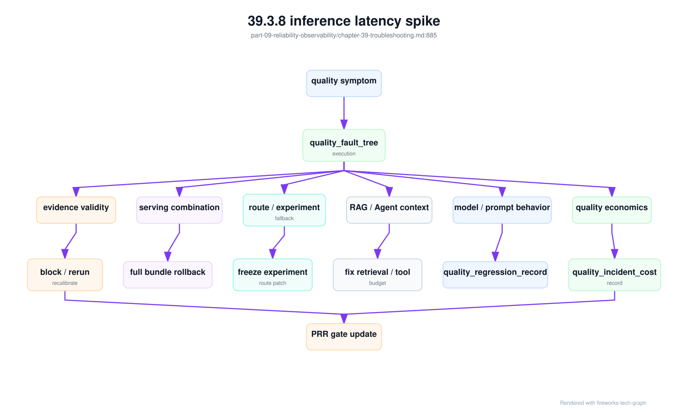
这棵故障树的 stop rule 是：没有 quality_evidence_validity，不能把 gate 当作可信证据；没有 serving_quality_contract 与 gate execution 的一致性，不能断言线上组合等同于评测组合；没有 routing_quality_decision_record，不能判断是不是路由或 fallback 造成；没有 RAG/Agent 子证据，不能把上下文或工具问题归因给模型；没有 quality_cost_ledger，不能判断事故优先级和治理投入。质量事故最容易变成主观争论，故障树的价值就是把争论压回可验证证据。
当质量或安全症状明确落在 RAG/Agent 链路时，应执行更细的 rag_agent_fault_tree_execution。它的入口可以是引用错误、越权检索、过期文档被引用、Agent 工具重复副作用、预算耗尽、工具策略拒绝突增、任务完成但轨迹不可接受，或者某个 Agent task slice 的 cost per successful task 上升。它不是替代质量故障树，而是把质量故障树中的 RAG/Agent 分支展开到权限、索引、context、工具、预算和副作用层。
rag_agent_fault_tree_execution:
execution_id: rafte-20260620-001
incident_id: inc-20260620-rag-agent-001
trigger:
symptom: citation_failure_or_tool_side_effect_or_budget_loop
affected_task_slices: [rag_citation, support_agent_tooling]
affected_tenants: [enterprise-a]
entry_evidence:
rag_agent_evidence_bundle: raeb-20260620-001
rag_agent_admission_context: raac-20260620-0002
quality_fault_tree_execution: qfte-20260620-001
branches:
gateway_admission:
checks:
- rag_index_release_contract_selected_and_allowed
- agent_tool_policy_contract_selected_and_allowed
- data_boundary_and_budget_policy_versions_match
verdict: pass_or_bad_admission_context
action_if_confirmed: block_route_or_fix_gateway_policy
retrieval_permission:
checks:
- retrieval_permission_decision_replayable
- acl_snapshot_matches_rag_index_release_contract
- retrieval_acl_invalidation_event_none_open
- cache_key_includes_acl_snapshot
verdict: pass_or_acl_or_cache_failure
action_if_confirmed: invalidate_index_cache_and_billing_window
context_assembly:
checks:
- rag_context_snapshot_present
- rag_context_replay_bundle_reproduces_context
- truncation_report_did_not_drop_primary_evidence
- citation_map_matches_answer
verdict: pass_or_context_or_citation_failure
action_if_confirmed: fix_prompt_context_budget_or_citation_schema
tool_policy:
checks:
- agent_tool_policy_contract_matches_run
- tool_schema_versions_match_model_prompt
- side_effect_policy_requires_confirmation_when_needed
- idempotency_and_rollback_refs_present
verdict: pass_or_policy_or_schema_drift
action_if_confirmed: freeze_tool_or_rollback_contract
tool_runtime:
checks:
- agent_tool_execution_record_complete
- sandbox_profile_matches_contract
- external_api_errors_classified
- observation_size_within_budget
verdict: pass_or_tool_runtime_failure
action_if_confirmed: degrade_tool_retry_or_handoff
budget_and_loop:
checks:
- agent_budget_ledger_present
- loop_detection_triggered_if_applicable
- budget_actions_match_policy
- failed_run_waste_estimated
verdict: pass_or_budget_control_failure
action_if_confirmed: tighten_budget_or_add_handoff
economics:
checks:
- rag_agent_cost_attribution_updated
- rag_agent_incident_cost_record_required
- affected_low_quality_or_wasted_tokens_estimated
verdict: pass_or_cost_gap
action_if_confirmed: append_rag_agent_incident_cost_record
outputs:
rag_agent_incident_cost_record: generated_if_user_visible_or_side_effect
agent_tool_policy_contract: updated_if_schema_or_side_effect_drift
retrieval_acl_invalidation_event: emitted_if_stale_access_possible
prr_gate_update: generated_if_contract_gap_found
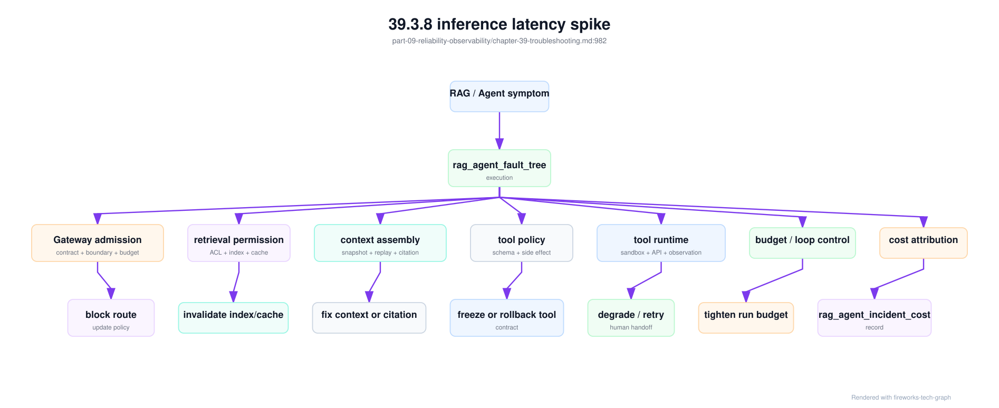
这棵故障树的 stop rule 是：没有 rag_index_release_contract，不能证明线上索引可服务；没有 retrieval_permission_decision 和 ACL 失效状态，不能判断是否越权；没有 rag_context_replay_bundle，不能复现引用错误；没有 agent_tool_policy_contract，不能判断工具调用是否符合发布策略；没有 agent_trajectory_replay_bundle，不能安全复现多步任务；没有 agent_budget_ledger，不能判断成本失控来自模型、工具还是循环。它把“RAG 不准”和“Agent 不可靠”拆成可执行的证据路径。
安全和成本型事故也需要故障树。典型症状包括：某个租户预算在短时间内被打满，同一 API Key 出现多地域来源，第三方 provider 成本突增，长上下文请求比例异常，Agent run 步数失控，或者高敏请求被错误 fallback 到外部 provider。它们与传统服务故障不同：HTTP 可能都是 2xx，模型质量也可能正常，但平台的身份边界、数据边界或经济边界已经失控。若仍用“服务是否可用”作为入口，事故会等到账单或客户投诉时才暴露。
security_policy_fault_tree_execution 用来把这类事故拆成可验证分支。第一分支是 credential：key 是否泄露、是否新建、来源是否异常、是否绕过 rotation 或禁用策略。第二分支是 policy：Gateway 是否按正确版本执行 policy_decision_record，是否有 dry-run 漏放或实例配置漂移。第三分支是 egress：egress_provider_decision 是否存在、provider 合同和区域是否允许、fallback 是否越过数据边界。第四分支是 spend：请求形态和成本速度是否符合租户历史和审批。第五分支是 observability：trace、prompt、RAG context、tool 参数是否被正确脱敏。每个分支都要能指向证据和止血动作。
security_policy_fault_tree_execution:
execution_id: spfte-sec-20260620-001
incident_id: sec-20260620-dow-001
security_evidence_bundle: seb-20260620-001
entry:
symptom: provider_cost_spike_or_budget_burn_or_boundary_violation
affected_tenants: [enterprise-a]
affected_credentials: [key_6f2c_redacted]
first_signal: spend_velocity_alert
branches:
credential:
verdict: ruled_out_or_confirmed_or_unknown
evidence: [credential_lifecycle, api_key_audit_events, source_asn_geo_diff]
immediate_actions: [freeze_or_rotate_key_if_confirmed]
gateway_policy:
verdict: ruled_out_or_confirmed_or_unknown
evidence: [policy_decision_records, gateway_policy_version, dry_run_diff]
immediate_actions: [rollback_policy_or_block_rule_if_confirmed]
provider_egress:
verdict: ruled_out_or_confirmed_or_unknown
evidence: [egress_provider_decisions, provider_contract, route_trace]
immediate_actions: [disable_external_provider_fallback_if_suspect]
spend_velocity:
verdict: ruled_out_or_confirmed_or_unknown
evidence: [denial_of_wallet_admission_guard, metering_events, budget_ledger]
immediate_actions: [throttle_large_context_or_agent_steps, billing_hold]
trace_and_export:
verdict: ruled_out_or_confirmed_or_unknown
evidence: [prompt_trace_redaction_records, security_audit_events, export_logs]
immediate_actions: [freeze_export, revoke_break_glass_access]
conclusion:
most_likely_domain: credential_or_policy_or_provider_egress_or_spend_velocity_or_unknown
confidence: low_medium_or_high
evidence_gaps: []
outputs:
denial_of_wallet_incident_record: generated_if_cost_attack
billing_dispute_replay: opened_if_chargeability_unclear
abuse_cost_ledger: append_if_abuse_or_anomaly
prr_gate_update: generated_if_gate_gap_found
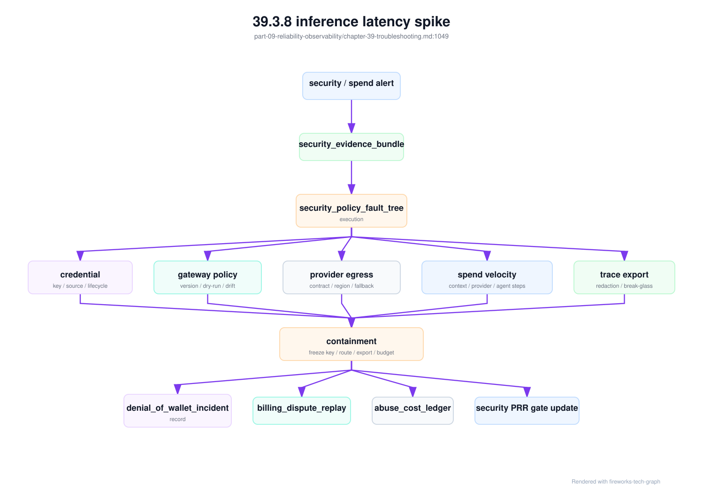
这棵树的价值是把“安全事故”拆成不同责任和成本路径。若 credential 分支确认泄露，优先轮换、冻结和争议计费；若 provider egress 分支确认越权，优先关外联、审计合同和通知受影响租户；若 spend velocity 分支确认免费额度被刷但没有数据越界，重点是预算 guard、billing hold 和产品策略修复；若 trace export 分支确认泄露，必须进入数据事件和导出审计。不同分支的技术动作、客户沟通和经济处理完全不同，不能用同一个“security issue”标签糊掉。
容器 GPU runtime 故障也需要单独故障树。入口症状包括 CreateContainerError、OCI runtime create failed、容器内 nvidia-smi 看不到 GPU、Pod 申请 1 张 GPU 却看到多张、MIG Pod 看到整卡、CDI device 无法解析、RuntimeClass handler 不存在、libcuda.so.1 加载失败、容器内 RDMA device 缺失，以及升级后只有 Kubernetes Pod 失败而 Docker smoke test 通过。它们都发生在调度和应用之间，容易被误判为模型代码、driver 或 Kubernetes 控制面问题。
container_gpu_runtime_fault_tree_execution:
execution_id: cgrfte-20260620-001
incident_id: inc-20260620-gpu-runtime-001
entry:
symptom: create_container_error_or_visible_device_mismatch_or_cdi_resolution_failed
affected_node_pool: h100-inference-canary
affected_workloads: [gpu-smoke-runtimeclass, af-chat-large-canary]
recent_change: crc-gpu-runtime-20260620-001
evidence:
container_runtime_change_record: crc-gpu-runtime-20260620-001
container_gpu_runtime_acceptance_matrix: container-gpu-runtime-20260620
oci_runtime_injection_diff: sampled
gpu_assignment_record: sampled
gpu_device_visibility_reconciliation: sampled
gpu_operator_upgrade_evidence: optional
branches:
runtime_handler:
verdict: ruled_out_or_confirmed_or_unknown
evidence: [runtimeclass_handler_mapping, containerd_config_hash, kubelet_cri_endpoint]
action_if_confirmed: rollback_runtime_handler_or_patch_config
cdi_or_hook:
verdict: ruled_out_or_confirmed_or_unknown
evidence: [cdi_spec_hash, oci_runtime_injection_diff, nvidia_container_cli_log]
action_if_confirmed: regenerate_cdi_spec_or_rollback_toolkit
device_plugin_strategy:
verdict: ruled_out_or_confirmed_or_unknown
evidence: [device_plugin_strategy, kubelet_allocate_event, gpu_assignment_record]
action_if_confirmed: restore_strategy_or_redeploy_device_plugin
visibility_reconciliation:
verdict: ruled_out_or_confirmed_or_unknown
evidence: [gpu_device_visibility_reconciliation, nvidia_smi_inside_container, cuda_probe]
action_if_confirmed: cordon_node_and_block_pool_rollout
rdma_topology:
verdict: ruled_out_or_confirmed_or_unknown
evidence: [gpu_nic_topology_evidence, rdma_device_plugin_log, nccl_env_contract]
action_if_confirmed: repair_rdma_device_path_or_topology_labels
conclusion:
most_likely_domain: runtime_handler_or_cdi_or_device_plugin_or_visibility_or_rdma_or_unknown
confidence: low_medium_or_high
evidence_gaps: []
outputs:
baseline_invalidation_record: generated_if_pool_scope_affected
reliability_cost_ledger: append_if_production_impact
prr_gate_update: generated_if_gate_gap_found
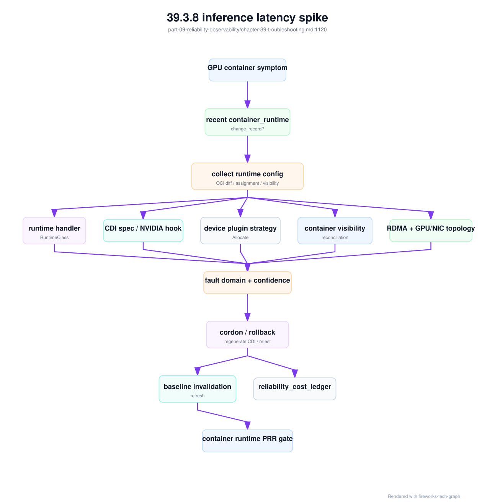
这个故障树的关键是先对齐三类事实：Kubernetes 分配事实、OCI 注入事实和容器内观察事实。Docker smoke test 通过，只证明主机和 Docker 路径可用；Kubernetes Pod 失败，仍可能是 kubelet CRI endpoint、RuntimeClass、containerd config、device plugin strategy、CDI spec 或 admission 策略问题。反过来，Kubernetes Pod Running 且 nvidia-smi 成功，也不证明隔离正确，必须检查是否看到未分配 GPU、MIG/整卡边界是否正确、RDMA device 是否匹配。故障树把这些检查固化下来，避免每次都从头猜。
资源声明故障还需要比容器 runtime 更早的故障树。入口症状包括 ResourceClaim 长期 pending、DeviceClass 没有匹配资源、Pod 已绑定但 claim 与 GPU class 不符、MIG claim 暴露整卡、GPU 空闲但 claim 无法满足、queue quota 显示有余量但 admission 拒绝、以及容器和账单标签无法关联到 claim。这类问题发生在“用户表达资源意图”和“kubelet/device plugin 分配设备”之间，若只看 Pod event 或容器日志，很容易把它误判为普通调度失败。
resource_claim_fault_tree_execution:
execution_id: rcfte-20260620-001
incident_id: inc-20260620-resource-claim-001
entry:
symptom: resource_claim_pending_or_bound_wrong_device_or_metering_label_missing
affected_workloads: [code-chat-prod, pretrain-exp-20260620]
affected_resource_pool: gpu-prod-mixed-202606
evidence:
gpu_resource_claim_contract: grcc-code-chat-20260620
resource_claim_admission_record: rcar-20260620-001
resource_claim_acceptance_matrix: rcam-gpu-prod-202606
heterogeneous_gpu_pool_profile: gpu-prod-mixed-202606
gpu_assignment_record: sampled
gpu_device_visibility_reconciliation: sampled
queue_fairness_ledger: sampled
branches:
claim_spec:
verdict: ruled_out_or_confirmed_or_unknown
evidence: [DeviceClass, ResourceClaimTemplate, ResourceClaim, extended_resource_name]
action_if_confirmed: fix_claim_template_or_admission_mapping
inventory_and_pool:
verdict: ruled_out_or_confirmed_or_unknown
evidence: [ResourceSlice_or_inventory_snapshot, heterogeneous_gpu_pool_profile, acceptance_baseline]
action_if_confirmed: refresh_inventory_or_block_device_class
policy:
verdict: ruled_out_or_confirmed_or_unknown
evidence: [resource_pool_entitlement, queue_quota, cost_budget, priority_class]
action_if_confirmed: update_entitlement_quota_or_pending_reason
topology:
verdict: ruled_out_or_confirmed_or_unknown
evidence: [rank_topology_contract, gpu_nic_topology_evidence, fabric_baseline]
action_if_confirmed: wait_for_topology_or_offer_conditional_degrade
runtime_handoff:
verdict: ruled_out_or_confirmed_or_unknown
evidence: [gpu_assignment_record, oci_runtime_injection_diff, cdi_spec_hash]
action_if_confirmed: enter_container_gpu_runtime_fault_tree
metering:
verdict: ruled_out_or_confirmed_or_unknown
evidence: [metering_resource_label_continuity, dcgm_pod_gpu_uuid_mapping]
action_if_confirmed: hold_billing_and_fix_label_pipeline
outputs:
pending_reason_update: generated
baseline_invalidation_record: generated_if_claim_mode_broken
reliability_cost_ledger: append_if_capacity_or_slo_impact
billing_hold: required_if_metering_label_missing
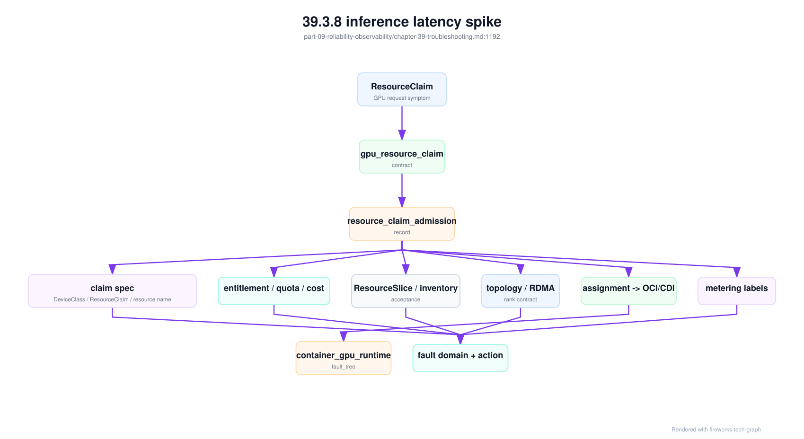
这个故障树能解释“GPU 空闲但 claim 不满足”的真实原因。空闲 GPU 可能不属于目标 DeviceClass，不满足 entitlement，不在同一拓扑域，基线被失效，MIG profile 不匹配，或者计量标签断链导致商业流量被阻断。它也能解释“claim bound 但容器错”的边界：claim 和 assignment 之后的问题，应进入容器 runtime 故障树；claim 之前的问题，应由调度、资源池、策略或 inventory 处理。分界清楚，owner 才清楚。
39.3.9 故障树分析¶
故障树分析把故障从症状拆到可能原因、证据和动作。AI Factory 应为高频故障建立标准树：训练 pending、NCCL hang、GPU Xid、推理 TTFT 高、checkpoint 慢、节点 NotReady、存储慢、模型 loss spike 和资源池容量异常。故障树让排障从经验驱动变为流程驱动。
一棵好的故障树包含入口症状、影响面判断、必要指标、日志位置、排除顺序、自动化检查、人工判断点、临时止血、长期修复和复盘字段。它还应说明哪些证据缺失时无法继续判断，避免团队在没有证据时强行归因。故障树不是为了写文档，而是为了减少事故中的认知负担。
故障树应与自动化结合。能自动检查的分支，例如 Pod 状态、GPU Xid、RDMA counters、NCCL 日志、storage latency、最近变更和节点健康，应由系统预先收集；需要人工判断的分支，则给出明确问题和上下文。自动化越多，oncall 越能集中处理真正复杂的判断。
故障树必须从 incident 中更新。每次事故后，如果某个证据缺失，就补指标；如果某个判断依赖专家经验，就沉淀成 runbook；如果某个处置动作有效，就加入止血步骤；如果某个告警误报，就调整阈值。故障树是运行中的知识库。
故障树还应有 owner。没有 owner 的 runbook 很快过期；没有演练的故障树，在事故中可能不可用。关键故障树应定期演练，确保工具、权限、指标和联系人仍然有效。
故障树也要允许“不知道”。当证据不足以区分两个分支时，流程应明确需要补采什么，而不是强行选择一个根因。成熟的诊断体系不是每次都立刻有答案，而是能清楚说明当前证据支持什么、不支持什么、下一步如何验证。
39.4 工程落地¶
39.4.1 工程实现¶
工程实现的第一步，是为高损失故障定义标准诊断包。NCCL hang 包含 job events、pod status、rank mapping、NCCL logs、GPU Xid/ECC、RDMA counters、switch port counters、node events 和 recent changes；推理 latency 包含 request trace、gateway log、model route、replica、GPU、KV Cache、batch、cache hit 和 model version。诊断包应自动生成。
第二步，是把诊断包和资源状态联动。若某个 GPU 多次触发严重 Xid，资源池应自动隔离；若某个 rack 出现 RDMA 重传和 NCCL 回归失败，调度器应暂缓新大任务进入；若某个模型版本引起 TTFT 回归，发布系统应进入暂停或回滚。诊断不应只输出报告，还应影响系统动作。
第三步，是建设故障知识库。每类故障记录入口症状、必要证据、判断逻辑、止血动作、长期修复、复盘模板和相关 dashboard。知识库应与 oncall 工具连接，事故发生时能直接打开对应 runbook，而不是让值班人员在文档站搜索。
diagnosis:
symptom: nccl_hang
collect:
- job_events
- pod_status
- rank_to_node_mapping
- framework_runtime_matrix
- parallelism_plan_record
- rank_topology_contract
- nccl_env_contract
- collective_trace_record
- communication_critical_path_record
- nccl_logs
- gpu_xid_ecc
- rdma_counters
- switch_port_counters
- recent_node_events
first_actions:
- preserve_logs
- mark_suspect_nodes
- prevent_new_large_jobs_on_suspect_domain
resolution:
- isolate_bad_gpu_or_nic
- rerun_nccl_test
- compare_with_acceptance_baseline
网络诊断包需要进一步包含拓扑和端口证据：
network_diagnosis:
symptom: nccl_hang
evidence:
rank_mapping: required
gpu_to_nic_affinity: required
nic_to_switch_port: required
rail_mapping: required
fabric_baseline_id: required
rdma_counters: required
switch_port_counters: required
nccl_selected_interface: required
container_rdma_visibility: required
decisions:
isolate_single_node_if:
- errors_concentrated_on_one_node
- baseline_fails_on_same_node
degrade_fabric_if:
- errors_spread_across_rail
- cross_rack_baseline_regresses
suspect_runtime_if:
- host_rdma_passes
- container_rdma_fails
- nccl_interface_mismatch
这个对象把“网络可能有问题”拆成三种不同动作：隔离单节点、降级 fabric、修复 runtime。动作不同，责任团队和恢复路径也不同。没有这个拆分，事故中很容易把所有网络相关现象都交给同一个团队处理。
训练故障建议统一生成 training_debug_bundle。它不是另一个日志压缩包，而是把训练运行时、并行、调度、通信、checkpoint、数据和成本影响组织成一份可执行证据。NCCL hang、step time 回归、loss spike、first effective step 超时、checkpoint 恢复失败，都可以从这个 bundle 进入不同分支。
training_debug_bundle:
bundle_id: tdb-20260620-031
symptom: nccl_hang_or_step_time_regression
training_job: exp-20260620-031
runtime:
framework_runtime_matrix: frm-h100-train-20260620
training_runtime_spec: recorded
image_digest: sha256:recorded
parallelism:
parallelism_plan_record: ppr-llm-20260620-001
rank_topology_contract: rtc-llm-20260620-001
placement_commit_record: pcr-exp-20260620-031
rank_mapping: rank-mapping-exp-20260620-031
communication:
nccl_env_contract: nec-h100-rdma-20260620
collective_trace_record: ctr-exp-20260620-031-window-84200
communication_critical_path_record: ccpr-exp-20260620-031
communication_regression_record: crr-20260620-004_if_recent_change
infrastructure:
gpu_health: attached
gpu_nic_topology_evidence: attached_if_rdma
fabric_baseline: train-fabric-a-20260620
rail_balance_report: attached
storage_evidence: attached_if_checkpoint_or_data_wait
checkpoint:
checkpoint_commit_record: attached_if_checkpoint_window
checkpoint_overlap_evidence: attached_if_step_spike_periodic
checkpoint_restore_drill: attached_if_recovery_issue
impact:
allocated_gpu_hours: measured
effective_training_gpu_hours_lost: calculated
suspected_cost_ledger: training_roi_ledger
这个 bundle 给 oncall 一个明确的 stop rule：缺少 rank_mapping、nccl_env_contract 或 collective_trace_record 时，不应直接判断是网络问题；缺少 communication_critical_path_record 时，不应把某个慢 collective 直接换算成 GPU 浪费；缺少 checkpoint_overlap_evidence 时，不应把周期性 step spike 直接归因于 fabric；缺少 parallelism_plan_record 时，不应评价并行策略是否合理。止血可以先做，但根因结论必须等证据齐备。
并行维度还应决定排障入口。DP/ZeRO 慢时先看梯度或状态同步、bucket、overlap 和慢 rank；TP 慢时先看同组 GPU 是否处于同一 NVLink/NVSwitch 域、层内 collective 是否跨节点、hidden/head 切分是否符合模板；PP 慢时先看最慢 stage、bubble、micro-batch 和相邻 stage 路径；EP 慢时先看 router 分布、expert overflow/drop、AllToAll 和热点 expert；SP/CP 慢或 OOM 时先看序列长度分布、activation checkpoint、attention 实现和通信 buffer。把所有症状都归为 “NCCL 慢”，会让故障树过早失去方向。
parallelism_fault_entry:
symptom: step_time_regression
choose_branch_by:
data_parallel_zero:
signals: [all_reduce_slow, reduce_scatter_slow, optimizer_state_sync_slow]
first_checks: [bucket_overlap, slow_rank, fabric_baseline]
tensor_parallel:
signals: [layer_collective_slow, tp_group_skew, single_node_tokens_drop]
first_checks: [same_nvswitch_domain, nvlink_baseline, tp_rank_mapping]
pipeline_parallel:
signals: [stage_idle_high, bubble_high, p2p_wait_high]
first_checks: [stage_balance, micro_batch_count, adjacent_stage_topology]
expert_parallel:
signals: [all_to_all_slow, expert_hotspot, token_drop_or_overflow]
first_checks: [router_distribution, expert_capacity, rail_balance]
sequence_context_parallel:
signals: [long_context_oom, activation_comm_slow, tail_sequence_step_spike]
first_checks: [length_distribution, context_parallel_impl, activation_checkpointing]
这个入口把并行策略从“背景配置”提升为故障树选择条件。值班人员不需要在事故中重新学习模型结构，但必须能从作业元数据看到并行计划和 rank group。
通信类事故的临时止血也要和证据分开。可以先暂停新大任务进入 suspect rack、隔离明显异常 NIC、回滚最近 NCCL env 模板、或恢复到上一个健康 checkpoint；但这些动作只是降低损失，不等于根因已定。最终复盘应指出哪一个 contract、baseline、regression 或 acceptance matrix 漏掉了风险，并把修复写回第 38 章的准入流程。
对应地，存储诊断包应描述路径、manifest、缓存和影响：
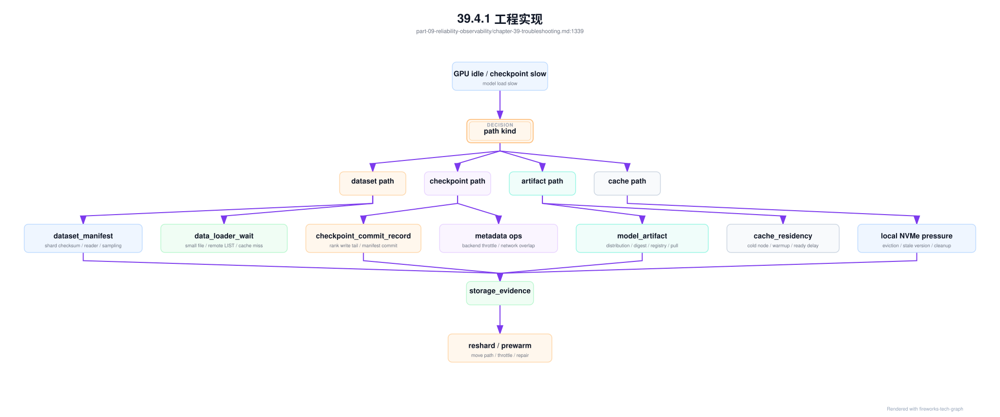
storage_diagnosis:
symptom: checkpoint_slow
evidence:
workload_id: required
storage_intent_id: required
path_kind: checkpoint
checkpoint_manifest: required
checkpoint_commit_record: required
rank_write_latency: required
metadata_ops: required
storage_backend_counters: required
cache_state: required_if_applicable
network_overlap_window: required
decisions:
reshard_dataset_if:
- small_file_metadata_dominates
- data_loader_wait_correlates_with_shards
adjust_checkpoint_if:
- rank_write_tail_dominates
- manifest_commit_delays_training
prewarm_artifact_if:
- model_load_time_blocks_readiness
- cache_miss_burst_correlates_with_scaleout
这个诊断包把存储排障从“哪个系统慢”推进到“哪条数据路径导致哪个 workload 慢”。它也能把结果回写到准入和调度：checkpoint-heavy 训练避开 limited 存储池，推理高峰前预热权重缓存。
存储故障树还要避免一个常见错误：把所有 GPU idle 都归到存储。只有当 storage_evidence 能证明 data loader wait、checkpoint pause、model load delay 或 cache miss 与 GPU idle 在同一时间窗口、同一 workload 和同一 path kind 上相关，才能把事故归入存储域。若 evidence 只显示存储端平均延迟升高，但没有 workload impact，最多说明有风险，不能直接作为根因。
模型产物供应链也需要独立排障分支。模型服务进程 ready 不代表产物可信；checkpoint 目录存在不代表可恢复；cache 命中不代表版本正确。供应链故障常表现为模型行为异常、回滚失败、推理冷启动慢、某些节点加载旧权重、训练恢复后 loss 漂移，或者合规要求下无法证明产物来源。排障时应沿 dataset -> checkpoint -> artifact -> cache -> serving release 的证据链检查。
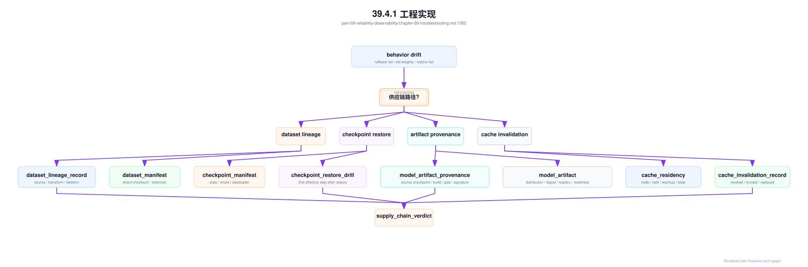
一个实用规则是：没有 provenance，不能把行为漂移直接归因给模型；没有 restore drill，不能把 checkpoint 当作可恢复点；没有 cache invalidation record，不能断言旧版本已从生产路径移除；没有 dataset lineage，不能解释数据分布变化。供应链排障的目标不是收集更多文件，而是证明每个产物在正确时间、正确版本、正确权限下被使用。
当事故已经涉及模型产物、tokenizer、RAG index、数据删除、checkpoint 恢复或缓存撤销，应进入 supply_chain_fault_tree_execution。它和普通存储故障树的区别是：存储故障树关注性能和可用性，供应链故障树关注“是否使用了正确且被允许的对象”。一次请求可以没有 5xx、没有 GPU 错误、没有明显延迟，却因为加载了旧 tokenizer、旧 RAG index 或未授权 artifact 而产生质量、合规和账单事故。
supply_chain_fault_tree_execution:
execution_id: scfte-20260620-001
trigger:
incident_id: inc-20260620-old-tokenizer
symptom: behavior_drift_or_old_weight_or_token_count_mismatch_or_acl_leak
entry_evidence:
supply_chain_invalidation_evidence_bundle: scieb-af-chat-large-20260620-001
supply_chain_release_contract: scrc-af-chat-large-20260620-r3
serving_release_evidence_bundle: sreb-af-chat-large-20260620-001
storage_evidence: attached_if_cache_or_artifact_load_issue
branches:
dataset_lineage:
checks:
- dataset_lineage_record_present
- deletion_request_closed_or_exempted
- dataset_manifest_digest_matches_training
verdict: pass_or_gap
checkpoint_restore:
checks:
- checkpoint_manifest_complete
- checkpoint_restore_acceptance_matrix_passed
- first_effective_step_after_restore_present
- loss_continuity_probe_passed
verdict: pass_or_restore_drift
artifact_provenance:
checks:
- source_checkpoint_allowed
- conversion_tool_digest_allowed
- tokenizer_and_template_digest_match_contract
- signature_valid_and_not_revoked
- quality_gate_eligible_for_tenant
verdict: pass_or_wrong_artifact
cache_and_distribution:
checks:
- model_artifact_distribution_reached_target_nodes
- cache_residency_digest_matches_contract
- running_replica_loaded_digest_sampled
- local_nvme_and_rack_cache_invalidated_if_needed
verdict: pass_or_stale_cache
rag_index:
checks:
- index_digest_matches_release
- acl_snapshot_matches_current_policy
- retrieval_permission_decision_replay
- old_index_unreachable_from_production_path
verdict: pass_or_acl_or_index_drift
accounting:
checks:
- usage_schema_matches_tokenizer_template
- affected_metering_window_identified
- billing_hold_or_replay_opened_if_needed
verdict: pass_or_billing_risk
actions:
containment:
- block_new_replica_on_invalid_cache_nodes
- drain_or_verify_running_replicas
- force_cache_rewarm_from_replacement_artifact
- open_billing_hold_if_tokenizer_or_template_changed
follow_up:
- append_supply_chain_incident_cost_record
- update_supply_chain_acceptance_matrix
- update_supply_chain_prr_invalidation_drill
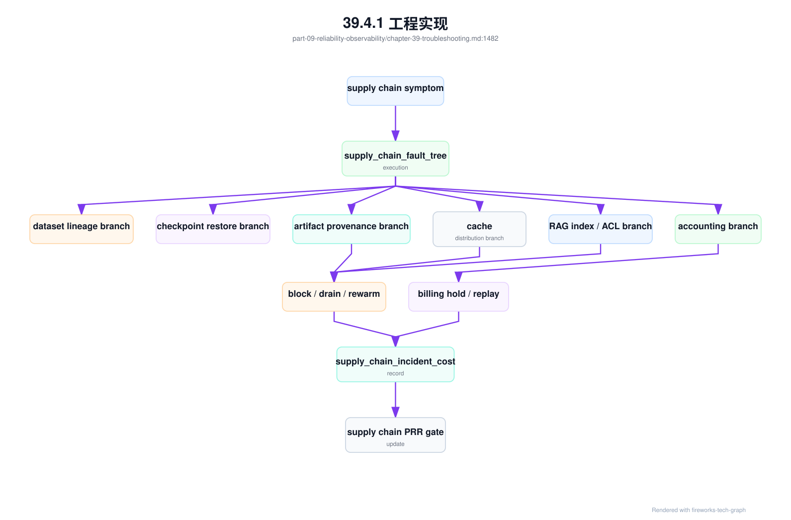
这棵故障树的 stop rule 应非常严格。没有 supply_chain_release_contract，不能证明线上组合是否被允许；没有 supply_chain_invalidation_evidence_bundle，不能证明撤销是否到达 runtime 和 cache；没有 running replica loaded digest 采样，不能证明副本内存中没有旧对象；没有 usage schema replay，不能证明 tokenizer/template 事故不会继续污染账单；没有 RAG ACL snapshot replay，不能证明旧索引不会越权。供应链事故的难点不是找到一个坏文件，而是证明所有旧路径都被阻断。
实际排障中还要区分性能事故和正确性事故。Cache miss 导致 cold start 慢，是性能事故；stale cache 命中旧权重，是正确性事故；RAG index 重建慢，是性能事故；旧 ACL snapshot 继续允许检索，是边界事故；checkpoint 恢复耗时超标，是恢复性能事故；恢复后 dataloader 或 scheduler state 漂移，是训练正确性事故。两者都可能浪费 GPU 或影响用户，但处置优先级不同：正确性和边界事故通常需要先阻断，再优化性能。
第四步，是把诊断结果回写系统。坏节点进入维修，坏 rail 降级，缺失指标进入可观测性 backlog，准入漏测项进入 acceptance pipeline，重复事故进入 SRE 复盘。诊断闭环不完成，故障知识就无法转化为系统能力。
第五步，是把诊断工具放到值班路径里。告警页面应直接提供诊断包入口、相关 runbook、最近变更、影响面和建议止血动作，而不是只给一条 Prometheus 表达式。事故中最稀缺的是注意力，工具应减少人工跳转和重复查询。
最后要建立回归验证。隔离、维修、升级、回滚或配置修改后，必须用与故障相关的基线验证恢复，例如 NCCL hang 后重跑对应拓扑的 NCCL test，推理长尾后重放代表性请求。没有回归验证，处置只是“症状暂时消失”。
回归验证结果应回写到资源池和变更记录，作为下一次调度、发布和验收的依据。
39.4.2 常见故障¶
第一类故障是自动重启清理了现场。任务恢复了，但日志、rank 状态、端口计数和容器现场都没了，根因无法复盘。解决方向是在重启或清理前自动归档诊断包，至少保存关键时间窗口的指标、日志和拓扑。
第二类故障是只看应用日志。应用日志能说明业务症状，但无法解释 GPU、网络、存储、调度和设施状态。解决方向是从症状出发自动关联基础设施证据。尤其是 NCCL hang、训练 loss spike 和推理长尾，单一日志视角很容易误导。
第三类故障是影响面不清。单节点问题被当成全局事故，或者全局网络问题被当成单任务失败。解决方向是先做 scope 判断：影响哪些 tenant、model、job、node、rack、rail 和 fabric。影响面决定优先级和止血动作。
第四类故障是处置只恢复任务，没有更新故障树。事故结束后，没有补指标、补 runbook、补自动化或调整准入，导致下次同类故障继续依赖人工经验。解决方向是把复盘行动项纳入工程 backlog，并跟踪完成。
第五类故障是过早归因。看到 Xid 就认定坏卡，看到重传就认定网络，看到 loss spike 就认定数据，都会造成错误处置。解决方向是要求每个根因结论至少有时间线、影响面和对照基线三类证据支撑。
第六类故障是权限和数据边界阻断诊断。SRE 看不到租户维度，网络团队看不到 job 映射，模型团队看不到 GPU 事件，结果每个团队只能证明自己这一层“没问题”。解决方向是建设脱敏的跨层诊断视图，让必要证据可见而敏感内容不可见。
第七类故障是基线缺失。没有健康样本，就无法判断当前指标偏离多少，只能凭经验争论。
39.4.3 性能指标¶
诊断流程指标包括 MTTD、MTTA、MTTR、MTTI、复发率、自动诊断命中率、误报率、人工升级次数和现场保留成功率。它们衡量故障诊断体系本身是否有效。恢复快但复发率高，说明根因修复不足；告警多但命中率低，说明噪音过大。
影响指标包括每类故障影响的 GPU 小时、token 数、请求数、任务数、租户数、SLO 违约和收入影响。AI Factory 的故障不应只按次数排序，而应按损失排序。一次大训练 hang 可能比几十个低优任务失败更重要。
故障信号指标包括 Xid/ECC/NVLink/RDMA/packet loss 事件频率、NCCL hang 次数、training loss spike 次数、inference latency spike 次数、checkpoint failure、storage timeout 和 node NotReady。它们用于发现高频故障类型和系统性退化。
知识库指标包括 runbook 覆盖率、诊断包完整率、复盘行动项完成率、故障树更新次数和重复事故比例。故障诊断不是只看单次事故，更要看组织是否在学习。重复事故比例高，说明知识没有真正进入系统。
这些指标应按故障类型分组。GPU、网络、存储、模型、调度和推理服务的诊断成熟度可能完全不同。分组后才能知道下一阶段应该补哪个领域的自动化和 runbook。
还应跟踪证据质量指标，例如诊断包缺失率、rank mapping 缺失率、端口计数回看成功率、日志保留窗口覆盖率和基线可用率。很多事故复盘失败不是因为没人努力，而是关键证据在事故发生前就没有被系统保存。
指标解释必须避免单点崇拜。MTTR 下降可能是止血更快，也可能是过早关闭事故；自动诊断命中率提高可能是真有效，也可能是分类过粗。SRE 应把流程指标、影响指标和复发指标放在一起看，才能判断诊断体系是否真正进步。
39.4.4 设计取舍¶
第一个取舍是快速止血与完整取证。生产系统应先降低影响，例如回滚、限流、隔离或迁移；但如果每次都立即清理现场，就无法根因分析。较好的做法是在自动止血前后保留必要诊断包，让恢复和取证同时进行。
第二个取舍是自动化隔离与误伤风险。自动隔离坏 GPU、NIC 或 rack 能保护生产，但规则过粗会误隔离大量资源，影响利用率。应按资源等级、故障严重度、重复次数和影响面分层处理。高优训练池可以更保守，低优资源池可以更多观察。
第三个取舍是通用 runbook 与专业判断。通用故障树能覆盖高频问题，但复杂事故仍需要专家判断。目标不是消灭专家，而是把专家从重复收集证据中解放出来，让他们处理真正新的问题。故障树提供下限，专家提升上限。
最终，故障诊断体系要让 AI Factory 具备记忆。每次事故都应让指标更完整、runbook 更清晰、自动化更有效、准入更严格或设计更稳健。没有记忆的系统，会在规模扩大后反复为同类问题付费。
设计时还要控制流程重量。低优小故障可以轻量处理，高影响事故必须完整复盘。把所有问题都按同一流程处理，会拖慢团队；把所有问题都轻量处理，又学不到经验。分级是关键。
还有一个取舍是集中式诊断平台与团队自有工具。集中平台提供统一对象模型和证据链，团队工具保留专业深度。更现实的做法是统一入口、统一事件和统一关联键，同时允许 GPU、网络、模型团队维护自己的深度分析工具。统一不等于抹平专业差异。
39.5 小结与延伸阅读¶
39.5.1 小结¶
- AI Factory 故障通常跨层传播，不能只按单组件排查。
- 时间线、拓扑和影响面是诊断的三条主线。
- GPU、网络、存储、运行时和模型指标要能关联。
- 故障树和 runbook 应从真实 incident 中持续演进。